RT-2：将网络知识迁移到机器人控制的视觉语言动作模型
RT-2: Vision-Language-Action Models Transfer Web Knowledge to Robotic Control
第 1 页Page 1PDF p.1
RT-2: Vision-Language-Action Models Transfer Web Knowledge to Robotic Control
核对原版排版
RT-2：视觉-语言-动作模型将网络知识迁移至机器人控制
Anthony Brohan, Noah Brown, Justice Carbajal, Yevgen Chebotar, Xi Chen, Krzysztof Choromanski, Tianli Ding, Danny Driess, Avinava Dubey, Chelsea Finn, Pete Florence, Chuyuan Fu, Montse Gonzalez Arenas, Keerthana Gopalakrishnan, Kehang Han, Karol Hausman, Alexander Herzog, Jasmine Hsu, Brian Ichter, Alex Irpan, Nikhil Joshi, Ryan Julian, Dmitry Kalashnikov, Yuheng Kuang, Isabel Leal, Lisa Lee, Tsang-Wei Edward Lee, Sergey Levine, Yao Lu, Henryk Michalewski, Igor Mordatch, Karl Pertsch, Kanishka Rao, Krista Reymann, Michael Ryoo, Grecia Salazar, Pannag Sanketi, Pierre Sermanet, Jaspiar Singh, Anikait Singh, Radu Soricut, Huong Tran, Vincent Vanhoucke, Quan Vuong, Ayzaan Wahid, Stefan Welker, Paul Wohlhart, Jialin Wu, Fei Xia, Ted Xiao, Peng Xu, Sichun Xu, Tianhe Yu, and Brianna Zitkovich
核对原版排版
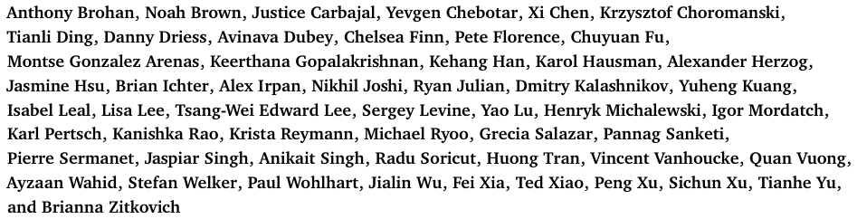
Anthony Brohan, Noah Brown, Justice Carbajal, Yevgen Chebotar, Xi Chen, Krzysztof Choromanski, Tianli Ding, Danny Driess, Avinava Dubey, Chelsea Finn, Pete Florence, Chuyuan Fu, Montse Gonzalez Arenas, Keerthana Gopalakrishnan, Kehang Han, Karol Hausman, Alexander Herzog, Jasmine Hsu, Brian Ichter, Alex Irpan, Nikhil Joshi, Ryan Julian, Dmitry Kalashnikov, Yuheng Kuang, Isabel Leal, Lisa Lee, Tsang-Wei Edward Lee, Sergey Levine, Yao Lu, Henryk Michalewski, Igor Mordatch, Karl Pertsch, Kanishka Rao, Krista Reymann, Michael Ryoo, Grecia Salazar, Pannag Sanketi, Pierre Sermanet, Jaspiar Singh, Anikait Singh, Radu Soricut, Huong Tran, Vincent Vanhoucke, Quan Vuong, Ayzaan Wahid, Stefan Welker, Paul Wohlhart, Jialin Wu, Fei Xia, Ted Xiao, Peng Xu, Sichun Xu, Tianhe Yu, and Brianna Zitkovich
Google DeepMind. Authors listed in alphabetical order, with contributions listed in Appendix A.
核对原版排版
Google DeepMind。作者按字母顺序列出，贡献列于附录 A。
We study how vision-language models trained on Internet-scale data can be incorporated directly into end-to-end robotic control to boost generalization and enable emergent semantic reasoning. Our goal is to enable a single end-to-end trained model to both learn to map robot observations to actions and enjoy the benefits of large-scale pretraining on language and vision-language data from the web. To this end, we propose to co-fine-tune state-of-the-art vision-language models on both robotic trajectory data and Internet-scale vision-language tasks, such as visual question answering. In contrast to other approaches, we propose a simple, general recipe to achieve this goal: in order to fit both natural language responses and robotic actions into the same format, we express the actions as text tokens and incorporate them directly into the training set of the model in the same way as natural language tokens. We refer to such category of models as vision-language-action models (VLA) and instantiate an example of such a model, which we call RT-2. Our extensive evaluation (6k evaluation trials) shows that our approach leads to performant robotic policies and enables RT-2 to obtain a range of emergent capabilities from Internet-scale training. This includes significantly improved generalization to novel objects, the ability to interpret commands not present in the robot training data (such as placing an object onto a particular number or icon), and the ability to perform rudimentary reasoning in response to user commands (such as picking up the smallest or largest object, or the one closest to another object). We further show that incorporating chain of thought reasoning allows RT-2 to perform multi-stage semantic reasoning, for example figuring out which object to pick up for use as an improvised hammer (a rock), or which type of drink is best suited for someone who is tired (an energy drink).
核对原版排版
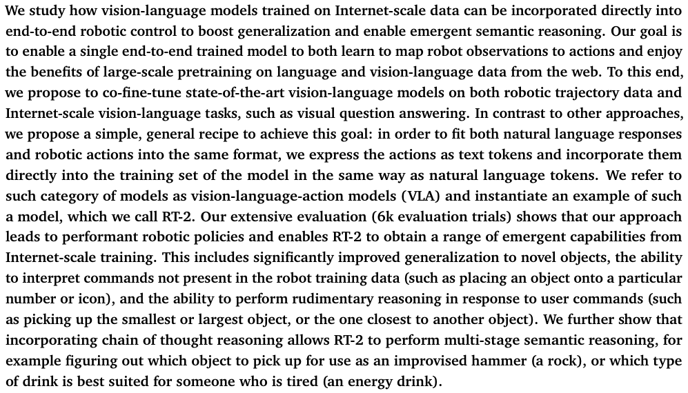
我们研究如何将基于互联网规模数据训练的视觉-语言模型直接融入端到端机器人控制中，以提升泛化能力并实现涌现的语义推理。我们的目标是使单个端到端训练的模型既能学会将机器人观测映射到动作，又能享受网络语言和视觉-语言数据大规模预训练带来的红利。为此，我们提议在机器人轨迹数据以及互联网规模的视觉-语言任务（例如视觉问答）上联合微调最先进的视觉-语言模型。与其他方法相比，我们提出了一种实现该目标的简单且通用的方法：为了将自然语言回复和机器人动作统一到相同格式中，我们将动作表示为文本 token，并以与自然语言 token 相同的方式将它们直接加入模型的训练集中。我们将此类模型称为视觉-语言-动作模型（VLA），并构建了该类模型的一个实例，称之为 RT-2。我们广泛的评估（6k 次评估试验）表明，我们的方法能够产生高性能的机器人策略，并使 RT-2 能够从互联网规模的训练中获得一系列涌现能力。这包括对新物体的泛化能力显著提高、能够理解机器人训练数据中未出现过的指令（例如将物体放在特定数字或图标上），以及根据用户指令执行初步推理的能力（例如拿起最小或最大的物体，或离另一物体最近的物体）。我们进一步表明，引入思维链推理使 RT-2 能够执行多阶段语义推理，例如判断出抓取哪个物体可用作临时锤子（石头），或者哪种饮料最适合疲惫的人（能量饮料）。
1. Introduction
核对原版排版
1. 引言
High-capacity models pretrained on broad web-scale datasets provide an effective and powerful platform for a wide range of downstream tasks: large language models can enable not only fluent text generation (Anil et al., 2023; Brohan et al., 2022; OpenAI, 2023) but emergent problem-solving (Cobbe et al., 2021; Lewkowycz et al., 2022; Polu et al., 2022) and creative generation of prose (Brown et al., 2020; OpenAI, 2023) and code (Chen et al., 2021), while vision-language models enable open-vocabulary visual recognition (Kirillov et al., 2023; Minderer et al., 2022; Radford et al., 2021) and can even make complex inferences about object-agent interactions in images (Alayrac et al., 2022; Chen et al., 2023a,b; Driess et al., 2023; Hao et al., 2022; Huang et al., 2023; Wang et al., 2022). Such semantic reasoning, problem solving, and visual interpretation capabilities would be tremendously useful for generalist robots that must perform a variety of tasks in real-world environments. However,
核对原版排版
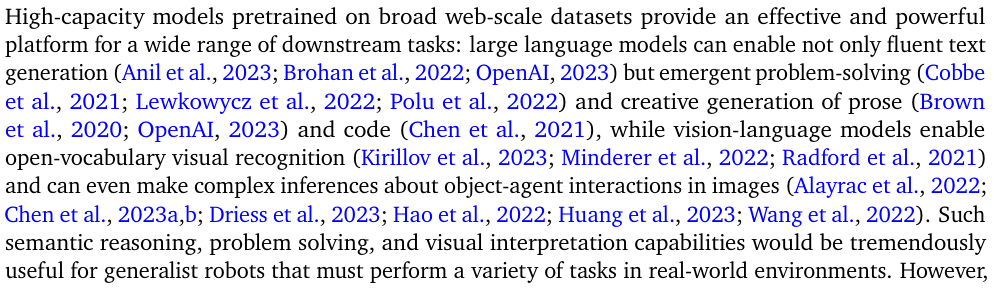
在广泛的网络规模数据集上预训练的大容量模型为各种下游任务提供了有效且强大的平台：大型语言模型不仅能够实现流畅的文本生成（Anil et al., 2023; Brohan et al., 2022; OpenAI, 2023），还能实现涌现式问题解决（Cobbe et al., 2021; Lewkowycz et al., 2022; Polu et al., 2022）以及散文（Brown et al., 2020; OpenAI, 2023）和代码（Chen et al., 2021）的创造性生成，而视觉-语言模型则能够实现开放词汇视觉识别（Kirillov et al., 2023; Minderer et al., 2022; Radford et al., 2021），甚至可以对图像中的物体-智能体交互进行复杂的推断（Alayrac et al., 2022; Chen et al., 2023a,b; Driess et al., 2023; Hao et al., 2022; Huang et al., 2023; Wang et al., 2022）。这种语义推理、问题解决和视觉解释能力对于必须在现实环境中执行各种任务的通用机器人来说将极为有用。然而，
展开第 1 页原版整页（含全部图表、公式与页眉页脚）
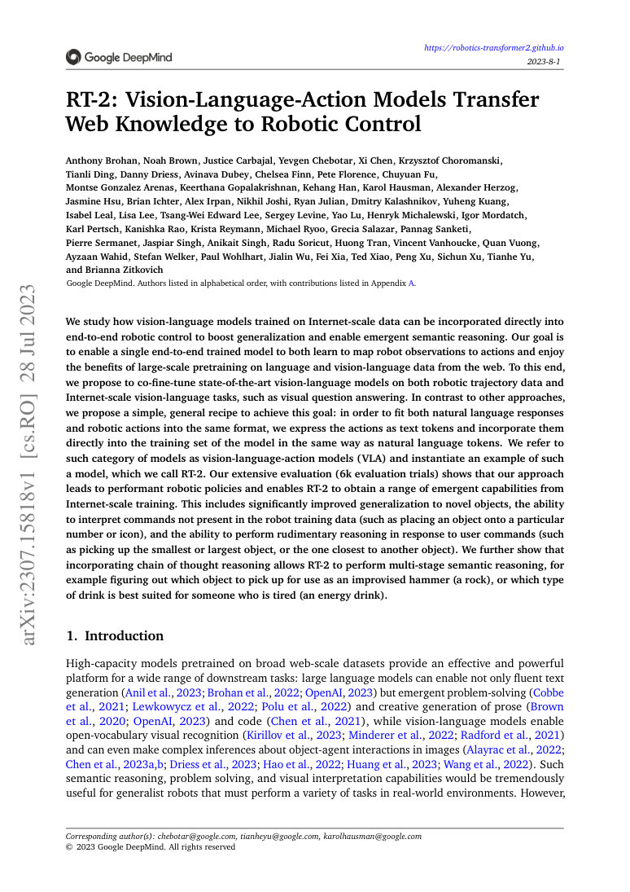
第 2 页Page 2PDF p.2
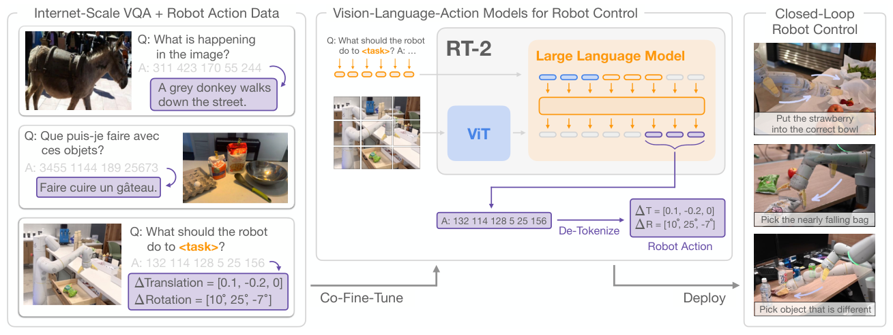
Figure 1 | RT-2 overview: we represent robot actions as another language, which can be cast into text tokens and trained together with Internet-scale vision-language datasets. During inference, the text tokens are de-tokenized into robot actions, enabling closed loop control. This allows us to leverage the backbone and pretraining of vision-language models in learning robotic policies, transferring some of their generalization, semantic understanding, and reasoning to robotic control. We demonstrate examples of RT-2 execution on the project website: `robotics-transformer2.github.io` .
核对原版排版
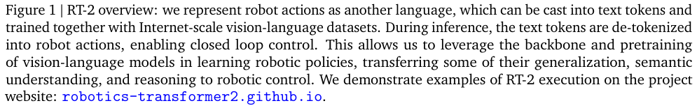
图 1 | RT-2 概览：我们将机器人动作表示为另一种语言，它可以转换为文本 token，并与互联网规模的视觉-语言数据集一起训练。在推理期间，文本 token 被反分词（de-tokenized）为机器人动作，从而实现闭环控制。这使我们能够在学习机器人策略时利用视觉-语言模型的主干网络和预训练，将其部分泛化能力、语义理解和推理能力迁移到机器人控制中。我们在项目网站上演示了 RT-2 执行的示例：`robotics-transformer2.github.io`。
it is unclear how robots should acquire such capabilities. While a brute force approach might entail collecting millions of robotic interaction trials, the most capable language and vision-language models are trained on billions of tokens and images from the web (Alayrac et al., 2022; Chen et al., 2023a,b; Huang et al., 2023) – an amount unlikely to be matched with robot data in the near future. On the other hand, directly applying such models to robotic tasks is also difficult: such models reason about semantics, labels, and textual prompts, whereas robots require grounded low-level actions, such as Cartesian end-effector commands. While a number of recent works have sought to incorporate language models (LLMs) and vision-language models (VLMs) into robotics (Ahn et al., 2022; Driess et al., 2023; Vemprala et al., 2023), such methods generally address only the “higher level” aspects of robotic planning, essentially taking the role of a state machine that interprets commands and parses them into individual primitives (such as picking and placing objects), which are then executed by separate low-level controllers that themselves do not benefit from the rich semantic knowledge of Internet-scale models during training. Therefore, in this paper we ask: can large pretrained visionlanguage models be integrated directly into low-level robotic control to boost generalization and enable emergent semantic reasoning?
核对原版排版
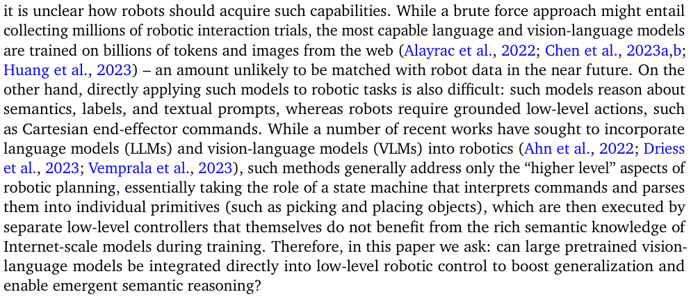
机器人应如何获得此类能力尚不清楚。尽管蛮力方法可能需要收集数百万次机器人交互试验，但能力最强的语言和视觉-语言模型是在来自网络的数十亿 token 和图像上进行训练的（Alayrac et al., 2022; Chen et al., 2023a,b; Huang et al., 2023）——在不久的将来，机器人数据不太可能达到这一体量。另一方面，将此类模型直接应用于机器人任务也很困难：这些模型对语义、标签和文本提示进行推理，而机器人需要具身落实的低层动作，例如笛卡尔末端执行器指令。虽然近期的一些工作试图将语言模型（LLM）和视觉-语言模型（VLM）引入机器人学（Ahn et al., 2022; Driess et al., 2023; Vemprala et al., 2023），但这些方法通常仅解决机器人规划的“更高层次”方面，本质上充当状态机的角色，负责解释指令并将其解析为单个基元（例如抓取和放置物体），然后由单独的低层控制器执行，而这些低层控制器本身在训练期间并没有从互联网规模模型的丰富语义知识中受益。因此，在本文中我们探讨：大型预训练视觉-语言模型能否直接整合到低层机器人控制中，以提升泛化能力并实现涌现的语义推理？
To this end, we explore an approach that is both simple and surprisingly effective: we directly train vision-language models designed for open-vocabulary visual question answering and visual dialogue to output low-level robot actions, along with solving other Internet-scale vision-language tasks. Although such models are typically trained to produce natural language tokens, we can train them on robotic trajectories by tokenizing the actions into text tokens and creating “multimodal sentences” (Driess et al., 2023) that “respond” to robotic instructions paired with camera observations by producing corresponding actions. In this way, vision-language models can be directly trained to act as instruction following robotic policies. This simple approach is in contrast with prior alternatives for incorporating VLMs into robot policies (Shridhar et al., 2022a) or designing new vision-languageaction architectures from scratch (Reed et al., 2022): instead, pre-existing vision-language models, with already-amortized significant compute investment, are trained without any new parameters to output text-encoded actions. We refer to this category of models as vision-language-action (VLA) models. We instantiate VLA models by building on the protocol proposed for RT-1 (Brohan et al., 2022), using a similar dataset, but expanding the model to use a large vision-language backbone. Hence we refer to our model as RT-2 (Robotics Transformer 2). We provide an overview in Figure 1.
核对原版排版
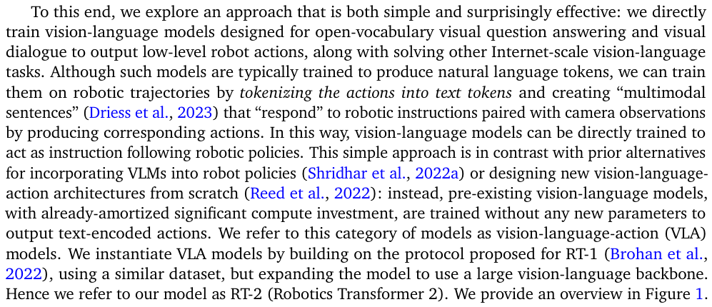
为此，我们探索了一种既简单又出奇有效的方法：我们直接训练专为开放词汇视觉问答和视觉对话而设计的视觉-语言模型，使其在解决其他互联网规模视觉-语言任务的同时输出低层机器人动作。尽管此类模型通常被训练用于生成自然语言 token，但我们可以通过将动作分词为文本 token 并创建“多模态句子”（Driess et al., 2023），使其在针对与相机观测配对的机器人指令时通过生成相应动作来做出“回复”，从而在机器人轨迹上训练它们。通过这种方式，视觉-语言模型可以直接被训练作为遵循指令的机器人策略。这种简单的方法与以往将 VLM 引入机器人策略的替代方案（Shridhar et al., 2022a）或从零开始设计新的视觉-语言-动作架构（Reed et al., 2022）形成了对比：相反，已有的视觉-语言模型由于此前巨大的计算投资已被分摊，可以在不增加任何新参数的情况下接受训练以输出文本编码的动作。我们将这类模型称为视觉-语言-动作（VLA）模型。我们通过基于 RT-1（Brohan et al., 2022）提出的方案并使用类似的数据集来实例化 VLA 模型，但将模型扩展为使用大型视觉-语言主干网络。因此，我们将我们的模型称为 RT-2（Robotics Transformer 2）。我们在图 1 中给出了概览。
展开第 2 页原版整页（含全部图表、公式与页眉页脚）
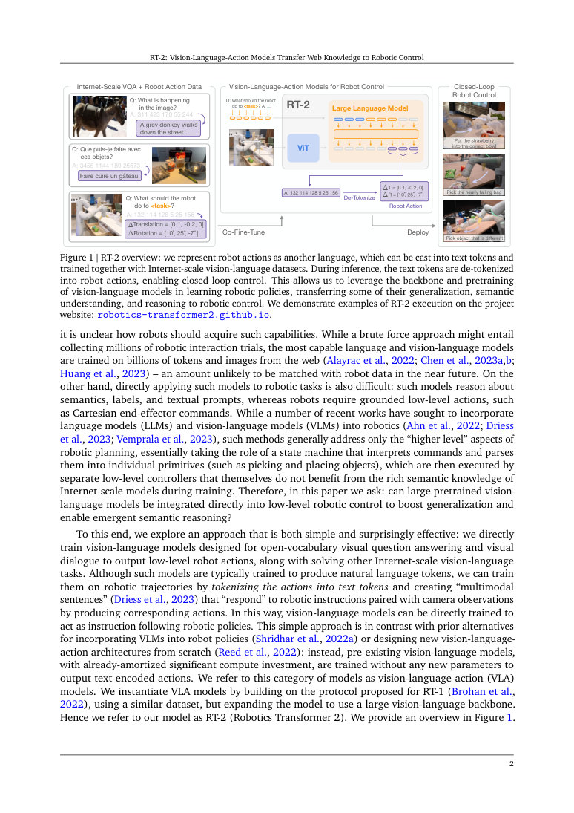
第 3 页Page 3PDF p.3
We observe that robotic policies derived from such vision-language models exhibit a range of remarkable capabilities, combining the physical motions learned from the robot data with the ability to interpret images and text learned from web data into a single model. Besides the expected benefit of dramatically improving generalization to novel objects and semantically varied instructions, we observe a number of emergent capabilities. While the model’s physical skills are still limited to the distribution of skills seen in the robot data, the model acquires the ability to deploy those skills in new ways by interpreting images and language commands using knowledge gleaned from the web. Some example highlights are shown in Figure 2. The model is able to re-purpose pick and place skills learned from robot data to place objects near semantically indicated locations, such as specific numbers or icons, despite those cues not being present in the robot data. The model can also interpret relations between objects to determine which object to pick and where to place it, despite no such relations being provided in the robot demonstrations. Furthermore, if we augment the command with chain of thought prompting, the model is able to make even more complex semantic inferences, such as figuring out which object to pick up for use as an improvised hammer (a rock), or which type of drink is best suited for someone who is tired (an energy drink).
核对原版排版
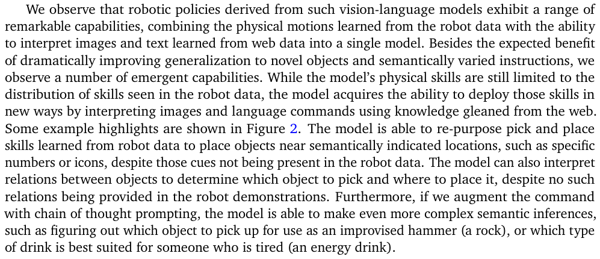
我们观察到，从这种视觉-语言模型中衍生出的机器人策略展现出一系列非凡的能力，在单个模型中将从机器人数据中学习到的物理运动与从网络数据中学习到的图像和文本理解能力结合在一起。除了显著改善对新物体和语义多样化指令的泛化能力这一预期优势外，我们还观察到了许多涌现能力。虽然该模型的物理技能仍受限于机器人数据中所见技能的分布，但通过利用从网络中收集的知识来解释图像和语言指令，该模型获得了以新方式部署这些技能的能力。图 2 显示了一些具有代表性的亮点示例。尽管这些线索并未出现在机器人数据中，但该模型能够重用从机器人数据中学到的抓取和放置技能，将物体放置在具有语义指示的位置附近，例如特定的数字或图标。该模型还可以解释物体之间的关系以确定抓取哪个物体以及将其放置在何处，尽管在机器人演示中并未提供此类关系。此外，如果我们通过思维链提示增强指令，该模型能够进行更复杂的语义推断，例如找出抓取哪个物体可以用作临时锤子（石头），或者哪种饮料最适合疲劳的人（能量饮料）。
Our main contribution is RT-2, a family of models derived from fine-tuning large vision-language models trained on web-scale data to directly act as generalizable and semantically aware robotic policies. Our experiments investigate models with up to 55B parameters trained on Internet data and instruction-annotated robotic trajectories from previous work (Brohan et al., 2022). Over the course of 6k robotic evaluations, we show that RT-2 enable significant improvements to generalization over objects, scenes, and instructions, and exhibit a breadth of emergent capabilities inherited from web-scale vision-language pretraining.
核对原版排版
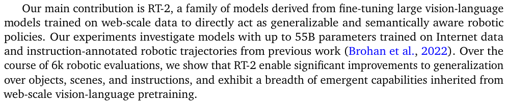
我们的主要贡献是 RT-2，这是一个通过微调在网络规模数据上训练的大型视觉-语言模型而形成的模型家族，可直接充当具有泛化能力和语义感知能力的机器人策略。我们的实验研究了参数量高达 55B 的模型，这些模型在互联网数据以及来自先前工作（Brohan et al., 2022）带有指令标注的机器人轨迹上进行了训练。在 6k 次机器人评估实验中，我们证明了 RT-2 能够显著提高对物体、场景和指令的泛化能力，并展现出从网络规模视觉-语言预训练中继承的广泛涌现能力。
2. Related Work
核对原版排版
2. 相关工作
Vision-language models. There are several categories of Vision-Language Models (VLMs) (Gan et al., 2022), with perhaps two most relevant: (1) representation-learning models, e.g. CLIP (Radford et al., 2021), which learn common embeddings for both modalities, and (2) visual language models of the form {vision , text} →{text} which learn to take vision and language as input and provide free-form text. Both categories have been used to provide pretraining for a wide variety of applied to downstream applications such as object classification (Radford et al., 2021), detection (Gu et al., 2021), and segmentation (Ghiasi et al., 2021). In this work, we focus on the latter category (Alayrac et al., 2022; Chen et al., 2023a,b; Driess et al., 2023; Hao et al., 2022; Li et al., 2023, 2019; Lu et al., 2019). These models are generally trained on many different tasks, such as image captioning, vision-question answering (VQA), and general language tasks on multiple datasets at the same time. While prior works study VLMs for a wide range of problems and settings including in robotics, our focus is on how the capabilities of VLMs can be extended to robotics closed-loop control by endowing them with the ability to predict robot actions, thus leveraging the knowledge already present in VLMs to enable new levels of generalization.
核对原版排版
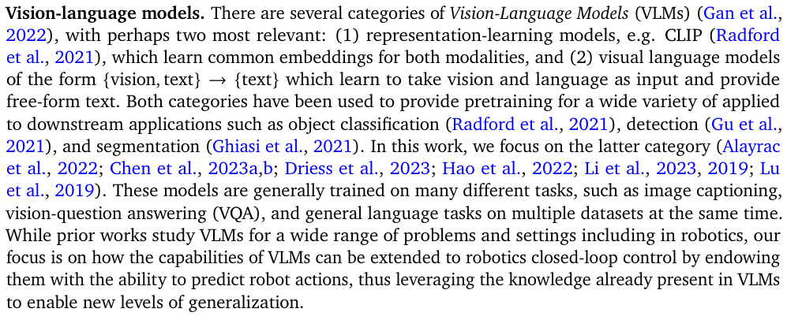
视觉-语言模型。视觉-语言模型（VLM）有几个类别（Gan et al., 2022），其中最相关的或许是两类：(1) 表示学习模型，例如 CLIP（Radford et al., 2021），它们为这两种模态学习通用嵌入；(2) 形式为 {vision , text} →{text} 的视觉语言模型，它们学习以视觉和语言为输入并提供自由格式文本。这两类模型都已被用于为广泛的下游应用提供预训练，例如物体分类（Radford et al., 2021）、检测（Gu et al., 2021）和分割（Ghiasi et al., 2021）。在这项工作中，我们重点关注后一类（Alayrac et al., 2022; Chen et al., 2023a,b; Driess et al., 2023; Hao et al., 2022; Li et al., 2023, 2019; Lu et al., 2019）。这些模型通常在多个数据集上同时针对许多不同任务进行训练，例如图像描述、视觉问答（VQA）以及通用语言任务。尽管先前的研究探讨了 VLM 在包括机器人在内的广泛问题和设置中的应用，但我们的重点是如何通过赋予 VLM 预测机器人动作的能力，将其能力扩展到机器人闭环控制中，从而利用 VLM 中已有的知识实现前所未有的泛化水平。
Generalization in robot learning. Developing robotic controllers that can broadly succeed in a variety of scenarios is a long-standing goal in robotics research (Kaelbling, 2020; Smith and Coles, 1973). A promising approach for enabling generalization in robotic manipulation is by learning from large and diverse datasets (Dasari et al., 2019; Levine et al., 2018; Pinto and Gupta, 2016). By doing so, prior methods have demonstrated how robots can generalize to novel object instances (Finn and Levine, 2017; Levine et al., 2018; Mahler et al., 2017; Pinto and Gupta, 2016; Young et al., 2021), to tasks involving novel combinations of objects and skills (Dasari and Gupta, 2021; Finn et al., 2017; James et al., 2018; Jang et al., 2021; Yu et al., 2018), to new goals or language instructions (Jang et al., 2021; Jiang et al., 2022; Liu et al., 2022; Mees et al., 2022; Nair et al., 2022a; Pong et al.,
核对原版排版
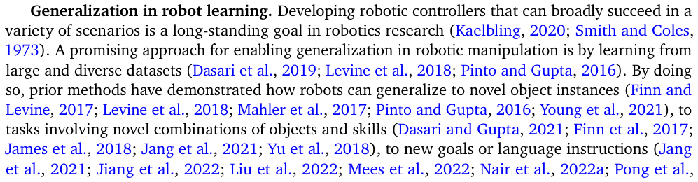
机器人学习中的泛化。开发能够在各种场景中广泛取得成功的机器人控制器是机器人学研究中一个长期以来的目标（Kaelbling, 2020; Smith and Coles, 1973）。在机器人操纵中实现泛化的一种很有前景的方法是从大规模且多样化的数据集中学习（Dasari et al., 2019; Levine et al., 2018; Pinto and Gupta, 2016）。通过这种方式，先前的方法已经证明了机器人如何能够泛化到新的物体实例（Finn and Levine, 2017; Levine et al., 2018; Mahler et al., 2017; Pinto and Gupta, 2016; Young et al., 2021）、涉及物体和技能新组合的任务（Dasari and Gupta, 2021; Finn et al., 2017; James et al., 2018; Jang et al., 2021; Yu et al., 2018），以及新的目标或语言指令（Jang et al., 2021; Jiang et al., 2022; Liu et al., 2022; Mees et al., 2022; Nair et al., 2022a; Pong et al.,
展开第 3 页原版整页（含全部图表、公式与页眉页脚）
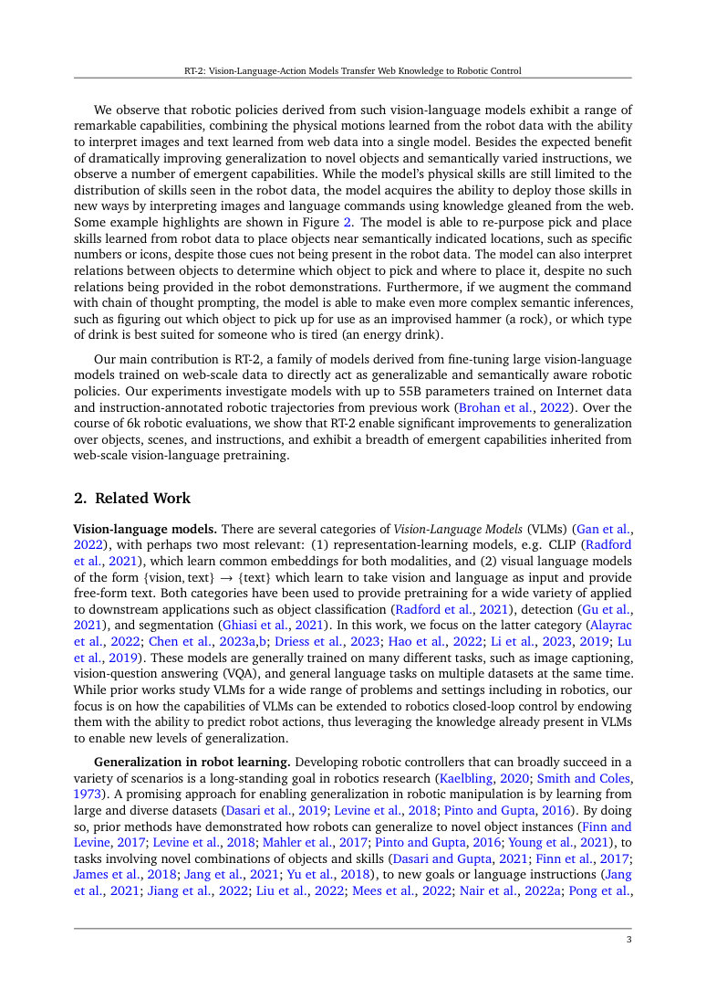
第 4 页Page 4PDF p.4
2019), to tasks with novel semantic object categories (Shridhar et al., 2021; Stone et al., 2023), and to unseen environments (Cui et al., 2022; Du et al., 2023a; Hansen et al., 2020). Unlike most of these prior works, we aim to develop and study a single model that can generalize to unseen conditions along all of these axes. A key ingredient of our approach is to leverage pre-trained models that have been exposed to data that is much broader than the data seen by the robot.
核对原版排版
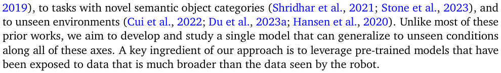
2019）、具有新颖语义物体类别的任务（Shridhar et al., 2021; Stone et al., 2023）以及未见过的环境（Cui et al., 2022; Du et al., 2023a; Hansen et al., 2020）。与大多数此类先前工作不同，我们的目标是开发并研究一个能够在所有这些维度上泛化到未见条件的单一模型。我们方法的一个关键要素是利用接触过远比机器人所见数据更为广泛的数据的预训练模型。
Pre-training for robotic manipulation. Pre-training has a long history in robotic learning. Most works focus on pre-trained visual representations that can be used to initialize the encoder of the robot’s camera observations, either via supervised ImageNet classification (Shah and Kumar, 2021), data augmentation (Kostrikov et al., 2020; Laskin et al., 2020a,b; Pari et al., 2021) or objectives that are tailored towards robotic control (Karamcheti et al., 2023; Ma et al., 2022; Majumdar et al., 2023b; Nair et al., 2022b; Xiao et al., 2022b). Other works have incorporated pre-trained language models, often either as an instruction encoder (Brohan et al., 2022; Hill et al., 2020; Jang et al., 2021; Jiang et al., 2022; Lynch and Sermanet, 2020; Nair et al., 2022a; Shridhar et al., 2022b) or for high-level planning (Ahn et al., 2022; Driess et al., 2023; Huang et al., 2022; Mu et al., 2023; Singh et al., 2023; Wu et al., 2023). Rather than using pre-training vision models or pre-trained language models, we specifically consider the use of pre-trained vision-language models (VLMs), which provide rich, grounded knowledge about the world. Prior works have studied the use of VLMs for robotics (Driess et al., 2023; Du et al., 2023b; Gadre et al., 2022; Karamcheti et al., 2023; Shah et al., 2023; Shridhar et al., 2021; Stone et al., 2023), and form part of the inspiration for this work. These prior approaches use VLMs for visual state representations (Karamcheti et al., 2023), for identifying objects (Gadre et al., 2022; Stone et al., 2023), for high-level planning (Driess et al., 2023), or for providing supervision or success detection (Du et al., 2023b; Ma et al., 2023; Sumers et al., 2023; Xiao et al., 2022a; Zhang et al., 2023). While CLIPort (Shridhar et al., 2021) and MOO (Stone et al., 2023) integrate pre-trained VLMs into end-to-end visuomotor manipulation policies, both incorporate significant structure into the policy that limits their applicability. Notably, our work does not rely on a restricted 2D action space and does not require a calibrated camera. Moreover, a critical distinction is that, unlike these works, we leverage VLMs that generate language, and the unified output space of our formulation enables model weights to be entirely shared across language and action tasks, without introducing action-only model layer components.
核对原版排版
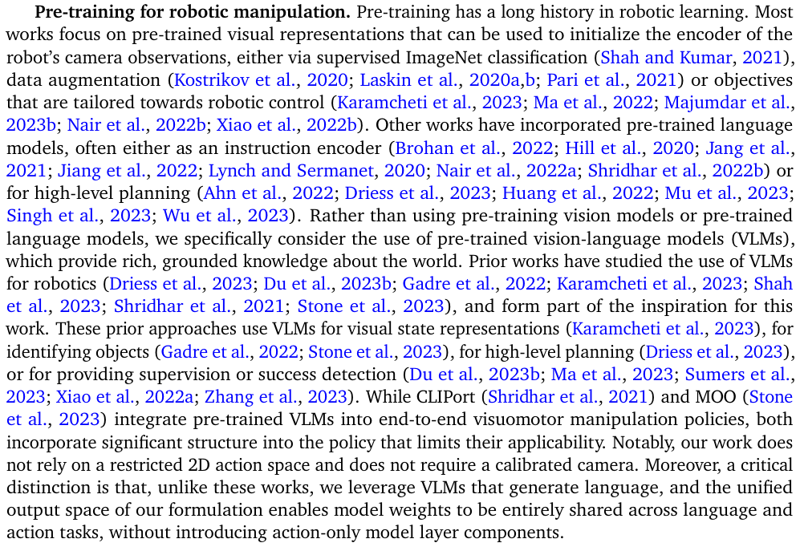
机器人操纵的预训练。预训练在机器人学习中有着悠久的历史。大多数工作聚焦于可用于初始化机器人相机观测编码器的预训练视觉表示，其途径包括有监督的 ImageNet 分类（Shah and Kumar, 2021）、数据增强（Kostrikov et al., 2020; Laskin et al., 2020a,b; Pari et al., 2021）或针对机器人控制量身定制的目标（Karamcheti et al., 2023; Ma et al., 2022; Majumdar et al., 2023b; Nair et al., 2022b; Xiao et al., 2022b）。其他工作引入了预训练语言模型，通常要么作为指令编码器（Brohan et al., 2022; Hill et al., 2020; Jang et al., 2021; Jiang et al., 2022; Lynch and Sermanet, 2020; Nair et al., 2022a; Shridhar et al., 2022b），要么用于高层规划（Ahn et al., 2022; Driess et al., 2023; Huang et al., 2022; Mu et al., 2023; Singh et al., 2023; Wu et al., 2023）。与使用预训练视觉模型或预训练语言模型不同，我们特别考虑使用预训练视觉-语言模型（VLM），它们提供了关于世界的丰富且具身落实的知识。先前的研究探讨了 VLM 在机器人学中的应用（Driess et al., 2023; Du et al., 2023b; Gadre et al., 2022; Karamcheti et al., 2023; Shah et al., 2023; Shridhar et al., 2021; Stone et al., 2023），并构成了本工作的部分灵感来源。这些先前的方法将 VLM 用于视觉状态表示（Karamcheti et al., 2023）、识别物体（Gadre et al., 2022; Stone et al., 2023）、高层规划（Driess et al., 2023），或用于提供监督或成功检测（Du et al., 2023b; Ma et al., 2023; Sumers et al., 2023; Xiao et al., 2022a; Zhang et al., 2023）。虽然 CLIPort（Shridhar et al., 2021）和 MOO（Stone et al., 2023）将预训练 VLM 整合到端到端视觉运动操纵策略中，但两者都在策略中引入了显著的结构，限制了其适用性。值得注意的是，我们的工作不依赖于受限的 2D 动作空间，也不需要经过标定的相机。此外，一个关键的区别在于，与这些工作不同，我们利用能够生成语言的 VLM，并且我们方案的统一输出空间使得模型权重能够在语言和动作任务之间完全共享，而无需引入仅用于动作的模型层组件。
3. Vision-Language-Action Models
核对原版排版
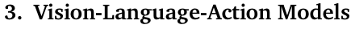
3. 视觉-语言-动作模型
In this section, we present our model family and the design choices for enabling training VLMs to directly perform closed-loop robot control. First, we describe the general architecture of our models and how they can be derived from models that are commonly used for vision-language tasks. Then, we introduce the recipe and challenges of fine-tuning large VLMs that are pre-trained on web-scale data to directly output robot actions, becoming VLA models. Finally, we describe how to make these models practical for robot tasks, addressing challenges with model size and inference speed to enable real-time control.
核对原版排版
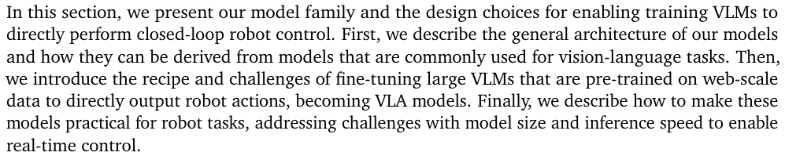
在本节中，我们介绍我们的模型系列，以及使训练 VLM 能够直接进行闭环机器人控制的设计选择。首先，我们描述我们模型的通用架构，以及它们如何从常用于视觉-语言任务的模型中衍生而来。随后，我们介绍对在网络规模数据上预训练的大型 VLM 进行微调以使其直接输出机器人动作、从而成为 VLA 模型的配方与挑战。最后，我们阐述如何使这些模型切实适用于机器人任务，解决模型参数量与推理速度方面的挑战以实现实时控制。
3.1. Pre-Trained Vision-Language Models
核对原版排版
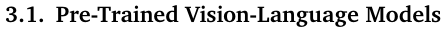
3.1. 预训练视觉-语言模型
The vision-language models (Chen et al., 2023a; Driess et al., 2023) that we build on in this work take as input one or more images and produce a sequence of tokens, which conventionally represents natural language text. Such models can perform a wide range of visual interpretation and reasoning tasks, from inferring the composition of an image to answering questions about individual objects and their relations to other objects (Alayrac et al., 2022; Chen et al., 2023a; Driess et al., 2023; Huang et al., 2023). Representing the knowledge necessary to perform such a wide range of tasks
核对原版排版
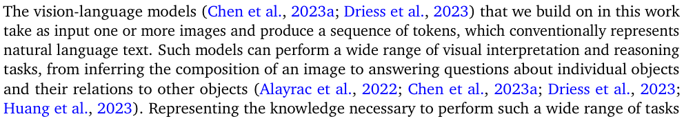
我们在此项工作中作为基础构建的视觉-语言模型（Chen et al., 2023a; Driess et al., 2023）将一张或多张图像作为输入，并生成一系列 token，这在传统上代表自然语言文本。此类模型能够执行广泛的视觉理解与推理任务，从推断图像的构图到回答有关单个物体及其与其他物体关系的问题（Alayrac et al., 2022; Chen et al., 2023a; Driess et al., 2023; Huang et al., 2023）。表示执行如此广泛的任务所需的知识
展开第 4 页原版整页（含全部图表、公式与页眉页脚）
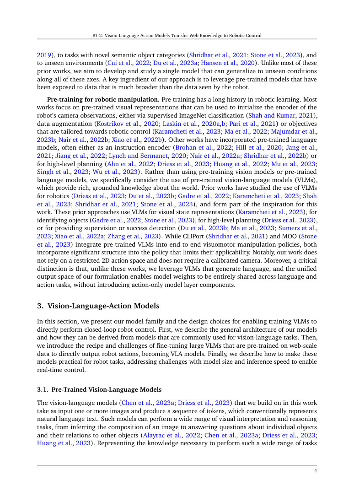
第 5 页Page 5PDF p.5
requires large models and web-scale datasets. In this work, we adapt two previously proposed VLMs to act as VLA models: PaLI-X (Chen et al., 2023a) and PaLM-E (Driess et al., 2023). We will refer to vision-language-action versions of these models as RT-2-PaLI-X and RT-2-PaLM-E. We leverage instantiations of these models that range in size from billions to tens of billions of parameters. We provide a detailed description of the architecture of these two models in Appendix D.
核对原版排版
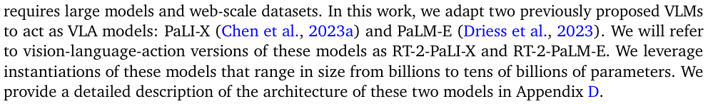
需要大型模型和网络规模数据集。在这项工作中，我们改造了之前提出的两个 VLM 以作为 VLA 模型：PaLI-X（Chen et al., 2023a）和 PaLM-E（Driess et al., 2023）。我们将这些模型的视觉-语言-动作版本称为 RT-2-PaLI-X 和 RT-2-PaLM-E。我们采用了这些模型的不同实例化版本，其参数量从数十亿到数百亿不等。我们在附录 D 中详细描述了这两个模型的架构。
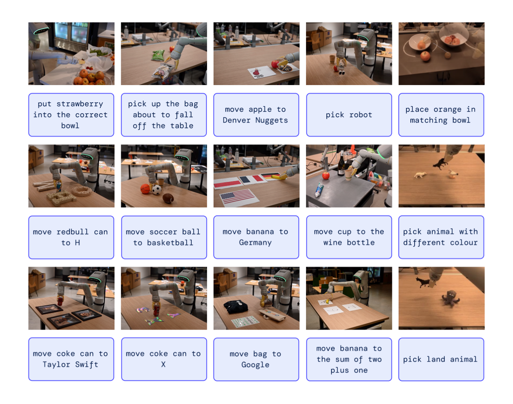
Figure 2 | RT-2 is able to generalize to a variety of real-world situations that require reasoning, symbol understanding, and human recognition. We study these challenging scenarios in detail in Section 4.
核对原版排版
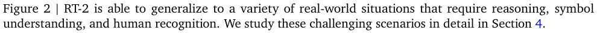
图 2 | RT-2 能够泛化到需要推理、符号理解和人体识别的各种现实世界场景。我们将在第 4 节中详细研究这些具有挑战性的场景。
3.2. Robot-Action Fine-tuning
核对原版排版
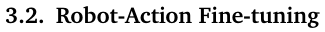
3.2. 机器人动作微调
To enable vision-language models to control a robot, they must be trained to output actions. We take a direct approach to this problem, representing actions as tokens in the model’s output, which are treated in the same way as language tokens. We base our action encoding on the discretization proposed by Brohan et al. (2022) for the RT-1 model. The action space consists of 6-DoF positional and rotational displacement of the robot end-effector, as well as the level of extension of the robot gripper and a special discrete command for terminating the episode, which should be triggered by the policy to signal successful completion. The continuous dimensions (all dimensions except for the discrete termination command) are discretized into 256 bins uniformly. Thus, the robot action can be represented using ordinals of the discrete bins as 8 integer numbers. In order to use these discretized actions to finetune a vision-language into a vision-language- action model, we need to associate tokens from the model’s existing tokenization with the discrete action bins. This requires
核对原版排版
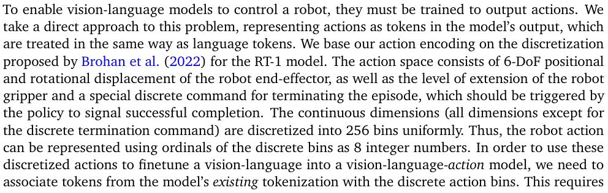
为使视觉-语言模型能够控制机器人，必须对其进行训练以输出动作。我们针对该问题采取了一种直接的方法，将动作表示为模型输出中的 token，并以与语言 token 相同的方式对其进行处理。我们的动作编码基于 Brohan et al. (2022) 为 RT-1 模型提出的离散化方案。动作空间包括机器人末端执行器的 6-DoF 位置与旋转位移、机器人夹爪的开合程度，以及一个用于终止当前回合的特殊离散命令，该命令应由策略触发以指示任务成功完成。各连续维度（除离散终止命令外的所有维度）被均匀离散化为 256 个 bin。因此，机器人动作可以用离散 bin 的序号表示为 8 个整数。为了利用这些离散化动作将视觉-语言模型微调为视觉-语言-动作模型，我们需要将模型现有分词体系（tokenization）中的 token 与这些离散动作 bin 关联起来。这需要
展开第 5 页原版整页（含全部图表、公式与页眉页脚）
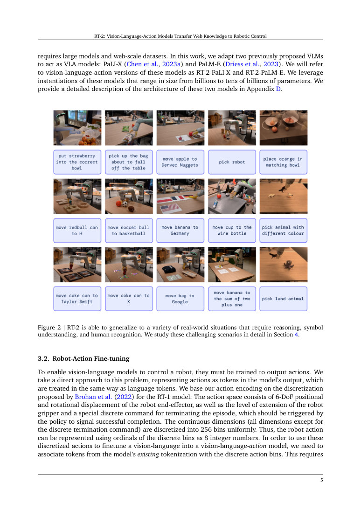
第 6 页Page 6PDF p.6
reserving 256 tokens to serve as action tokens. Which tokens to choose depends on the particular tokenization used by each VLM, which we discuss later in this section. In order to define a target for VLM fine-tuning we convert the action vector into a single string by simply concatenating action tokens for each dimension with a space character:
核对原版排版
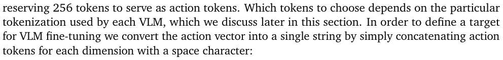
保留 256 个 token 作为动作 token。选择哪些 token 取决于各个 VLM 所采用的具体分词方式，我们将在本节后文对此展开讨论。为了定义 VLM 微调的目标，我们只需用空格字符将各个维度的动作 token 拼接起来，将动作向量转换为单个字符串：
“terminate Δpos 𝑥 Δpos 𝑦 Δpos 𝑧 Δrot 𝑥 Δrot 𝑦 Δrot 𝑧 gripperextension” .
核对原版排版
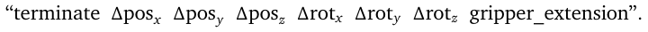
“terminate Δpos 𝑥 Δpos 𝑦 Δpos 𝑧 Δrot 𝑥 Δrot 𝑦 Δrot 𝑧 gripperextension”。
A possible instantiation of such a target could be: “1 128 91 241 5 101 127”. The two VLMs that we finetune in our experiments, PaLI-X (Chen et al., 2023a) and PaLM-E (Driess et al., 2023), use different tokenizations. For PaLI-X, integers up to 1000 each have a unique token, so we simply associate the action bins to the token representing the corresponding integer. For the PaLM-E model, which does not provide this convenient representation of numbers, we simply overwrite the 256 least frequently used tokens to represent the action vocabulary. It is worth noting that training VLMs to override existing tokens with action tokens is a form of symbol tuning (Wei et al., 2023), which has been shown to work well for VLMs in prior work.
核对原版排版
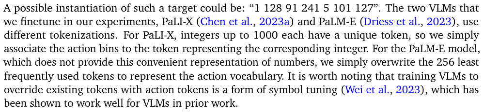
此类目标的一个可能实例化示例如：“1 128 91 241 5 101 127”。我们在实验中微调的两个 VLM——PaLI-X（Chen et al., 2023a）和 PaLM-E（Driess et al., 2023）采用了不同的分词方式。对于 PaLI-X，1000 以内的每个整数都有一个独立的唯一 token，因此我们只需将动作 bin 与代表对应整数的 token 关联起来。而对于未能提供这种便捷数字表示的 PaLM-E 模型，我们直接覆写了 256 个最不常用的 token 来表示动作词表。值得注意的是，通过训练 VLM 用动作 token 覆写现有 token 是符号微调（symbol tuning，Wei et al., 2023）的一种形式，先前的研究已表明其在 VLM 中效果良好。
Taking the action representation described above, we convert our robot data to be suitable for VLM model fine-tuning, where our inputs include robot camera image and textual task description (using standard VQA format “Q: what action should the robot take to [task instruction]? A:”), and our output is formatted as a string of numbers/least frequently used tokens representing a robot action.
核对原版排版
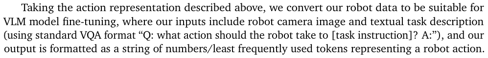
采用上述动作表示，我们将机器人数据转换为适用于 VLM 模型微调的形式，其中输入包括机器人相机图像和文本任务描述（采用标准 VQA 格式“Q: what action should the robot take to [task instruction]? A:”），输出则被格式化为由代表机器人动作的数字或最不常用 token 构成的字符串。
Co-Fine-Tuning. As we will show in our experiments, a key technical detail of the training recipe that improves robot performance is co-fine-tuning robotics data with the original web data instead of naïve finetuning on robot data only. We notice that co-fine-tuning leads to more generalizable policies since the policies are exposed to both abstract visual concepts from web scale data and low level robot actions during fine-tuning, instead of just robot actions. During co-fine-tuning we balance the ratios of robot and web data in each training batch by increasing the sampling weight on the robot dataset.
核对原版排版
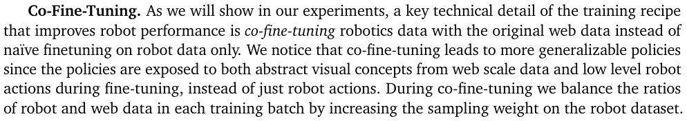
联合微调（Co-Fine-Tuning）。正如我们将在实验中展示的，能够提升机器人性能的训练配方中的一个关键技术细节，是将机器人数据与原始网络数据进行联合微调，而非仅在机器人数据上进行简单微调。我们注意到，联合微调能够产生更具泛化性的策略，因为策略在微调期间不仅接触到机器人动作，还同时接触到了来自网络规模数据的抽象视觉概念与底层机器人动作。在联合微调过程中，我们通过增加机器人数据集的采样权重，来平衡每个训练批次中机器人数据与网络数据的比例。
Output Constraint. One important distinction between RT-2 and standard VLMs is that RT-2 is required to output valid action tokens for execution on the real robot. Thus, to ensure that RT-2 outputs valid action tokens during decoding, we constrain its output vocabulary via only sampling valid action tokens when the model is prompted with a robot-action task, whereas the model is still allowed to output the full range of natural language tokens on standard vision-language tasks.
核对原版排版
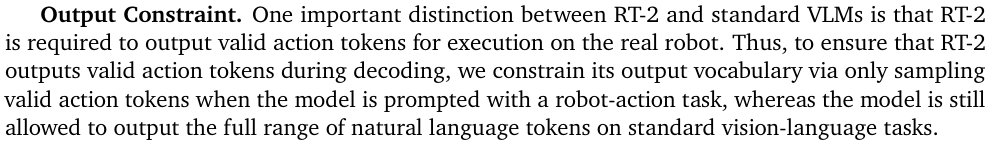
输出约束（Output Constraint）。RT-2 与标准 VLM 的一个重要区别在于，RT-2 需要输出有效的动作 token 以在真实机器人上执行。因此，为确保 RT-2 在解码过程中输出有效的动作 token，当模型接收到机器人动作任务提示时，我们通过仅采样有效动作 token 来对其输出词表进行约束；而在标准的视觉-语言任务上，模型仍被允许输出全范围的自然语言 token。
3.3. Real-Time Inference
核对原版排版
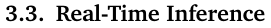
3.3. 实时推理
The size of modern VLMs can reach tens or hundreds of billions of parameters (Chen et al., 2023a; Driess et al., 2023). The largest model trained in this work uses 55B parameters. It is infeasible to directly run such models on the standard desktop-style machines or on-robot GPUs commonly used for real-time robot control. To the best of our knowledge, our model is the largest ever, by over an order of magnitude, used for direct closed-loop robotic control, and therefore requires a new set of solutions to enable efficient real-time inference. We develop a protocol that allows us to run RT-2 models on robots by deploying them in a multi-TPU cloud service and querying this service over the network. With this solution, we can achieve a suitable frequency of control and also serve multiple robots using the same cloud service. The largest model we evaluated, the 55B parameter RT-2-PaLI-X-55B model, can run at a frequency of 1-3 Hz. The smaller version of that model, consisting of 5B parameters, can run at a frequency of around 5 Hz.
核对原版排版
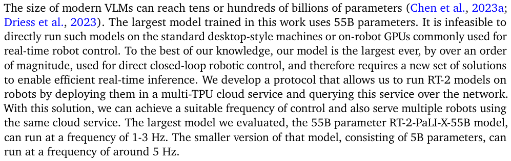
现代 VLM 的参数量可达数百亿甚至数千亿（Chen et al., 2023a; Driess et al., 2023）。本工作中训练的最大模型包含 55B 参数。直接在常用于实时机器人控制的标准台式机或机载 GPU 上运行此类模型是不可行的。据我们所知，我们的模型比以往任何用于直接闭环机器人控制的模型都大一个数量级以上，因此需要一套全新的解决方案来实现高效的实时推理。我们开发了一种通信协议，通过将 RT-2 模型部署在多 TPU 云服务中并通过网络查询该服务，从而使其能够在机器人上运行。借助该解决方案，我们可以实现适当的控制频率，并能利用同一云服务同时为多台机器人提供服务。我们评估的最大模型——拥有 55B 参数的 RT-2-PaLI-X-55B 模型，能够以 1–3 Hz 的频率运行。该模型的较小版本包含 5B 参数，能够以约 5 Hz 的频率运行。
4. Experiments
核对原版排版
4. 实验
Our experiments focus on real-world generalization and emergent capabilities of RT-2 and aim to answer the following questions:
核对原版排版
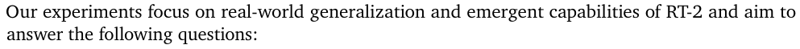
我们的实验重点关注 RT-2 在真实世界中的泛化能力与涌现能力，旨在回答以下问题：
展开第 6 页原版整页（含全部图表、公式与页眉页脚）
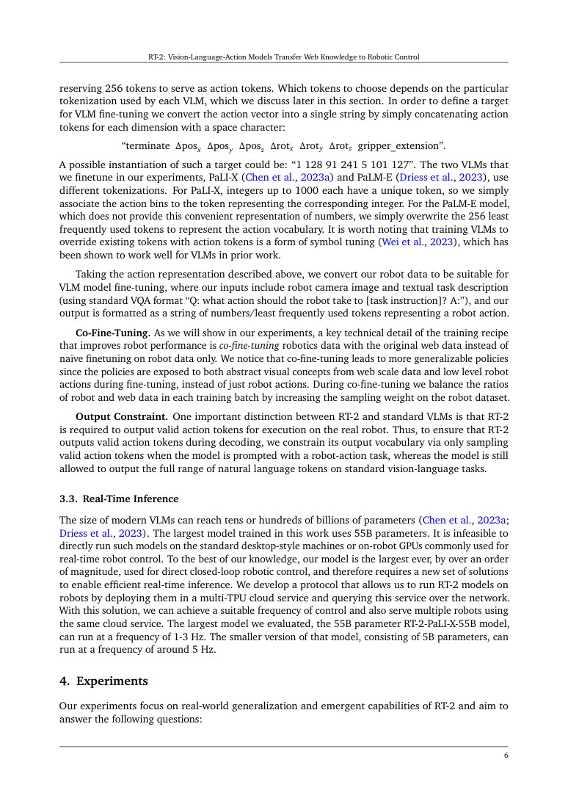
第 7 页Page 7PDF p.7
1. How does RT-2 perform on seen tasks and more importantly, generalize over new objects, backgrounds, and environments?
核对原版排版
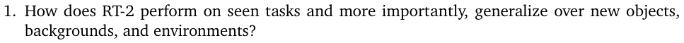
1. RT-2 在已见任务上表现如何？更重要的是，它如何泛化到新的物体、背景和环境中？
2. Can we observe and measure any emergent capabilities of RT-2?
核对原版排版
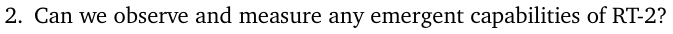
2. 我们能否观察并评估 RT-2 的任何涌现能力？
3. How does the generalization vary with parameter count and other design decisions?
核对原版排版
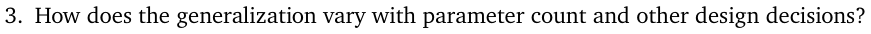
3. 泛化能力如何随参数量及其他设计抉择发生变化？
4. Can RT-2 exhibit signs of chain-of-thought reasoning similarly to vision-language models?
核对原版排版
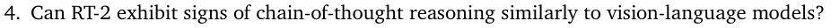
4. RT-2 能否像视觉-语言模型那样表现出思维链（chain-of-thought）推理的迹象？
We evaluate our approach and several baselines with about 6,000 evaluation trajectories in a variety of conditions, which we describe in the following sections. Unless specified otherwise, we use a 7DoF mobile manipulator with the action space described in Sec. 3.2. We also demonstrate examples of RT-2 execution on the project website: `robotics-transformer2.github.io` . We train two specific instantiations of RT-2 that leverage pre-trained VLMs: (1) RT-2-PaLI-X is built from 5B and 55B PaLI-X (Chen et al., 2023a), and (2) RT-2-PaLM-E is built from 12B PaLM-E (Driess et al., 2023).
核对原版排版
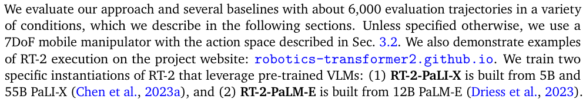
我们在多种条件下通过约 6,000 条评估轨迹对我们的方法和若干基线进行了评估，具体内容在后文各节中介绍。除非另有说明，我们使用具有第 3.2 节所述动作空间的 7 自由度（7DoF）移动操作臂。我们还在项目网站 robotics-transformer2.github.io 上展示了 RT-2 执行任务的示例。我们利用预训练 VLM 训练了两个特定的 RT-2 实例化版本：(1) RT-2-PaLI-X，基于 5B 和 55B 的 PaLI-X（Chen et al., 2023a）构建；(2) RT-2-PaLM-E，基于 12B 的 PaLM-E（Driess et al., 2023）构建。
For training, we leverage the original web scale data from Chen et al. (2023a) and Driess et al. (2023), which consists of visual question answering, captioning, and unstructured interwoven image and text examples. We combine it with the robot demonstration data from Brohan et al. (2022), which was collected with 13 robots over 17 months in an office kitchen environment. Each robot demonstration trajectory is annotated with a natural language instruction that describes the task performed, consisting of a verb describing the skill (e.g., “pick”, ”open”, “place into”) and one or more nouns describing the objects manipulated (e.g., “7up can”, “drawer”, “napkin”) (see Appendix B for more details on the used datasets). For all RT-2 training runs we adopt the hyperparameters from the original PaLI-X (Chen et al., 2023a) and PaLM-E (Driess et al., 2023) papers, including learning rate schedules and regularizations. More training details can be found in Appendix E.
核对原版排版
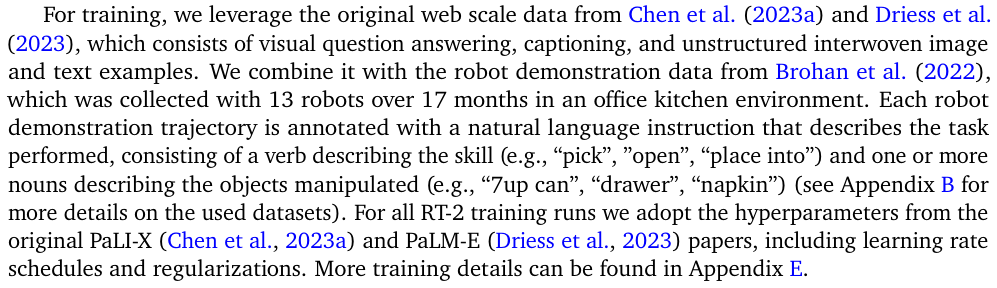
在训练方面，我们利用了来自 Chen et al. (2023a) 和 Driess et al. (2023) 的原始网络规模数据，这些数据包含视觉问答（VQA）、图像描述（captioning）以及非结构化的图文交织样本。我们将这些数据与来自 Brohan et al. (2022) 的机器人演示数据相结合，后者由 13 台机器人在办公厨房环境中历时 17 个月收集而成。每条机器人演示轨迹均标注有描述所执行任务的自然语言指令，包含描述技能的动词（例如“pick”、“open”、“place into”）以及一个或多个描述被操作物体的名词（例如“7up can”、“drawer”、“napkin”）（所用数据集的更多细节参见附录 B）。在所有 RT-2 训练实验中，我们沿用了 PaLI-X（Chen et al., 2023a）和 PaLM-E（Driess et al., 2023）原论文中的超参数，包括学习率调度策略和正则化设置。更多训练细节可参见附录 E。
Baselines. We compare our method to multiple state-of-the-art baselines that challenge different aspects of our method. All of the baselines use the exact same robotic data. To compare against a state-of-the-art policy, we use RT-1 (Brohan et al., 2022), a 35M parameter transformer-based model. To compare against state-of-the-art pretrained representations, we use VC-1 (Majumdar et al., 2023a) and R3M (Nair et al., 2022b), with policies implemented by training an RT-1 backbone to take their representations as input. To compare against other architectures for using VLMs, we use MOO (Stone et al., 2023), which uses a VLM to create an additional image channel for a semantic map, which is then fed into an RT-1 backbone. More information is provided in Appendix C.
核对原版排版
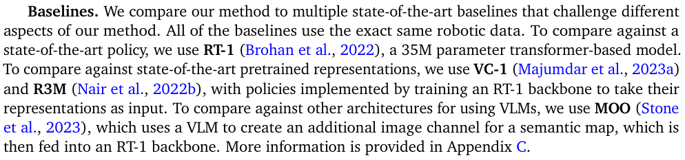
基线模型（Baselines）。我们将我们的方法与多个在不同方面构成挑战的代表性顶尖基线进行对比。所有基线均使用完全相同的机器人数据。为与当前最先进的策略进行对比，我们采用了 RT-1（Brohan et al., 2022），这是一个拥有 35M 参数的基于 Transformer 的模型。为与最先进的预训练表征进行对比，我们采用了 VC-1（Majumdar et al., 2023a）和 R3M（Nair et al., 2022b），其策略实现方式为训练一个接收这些表征作为输入的 RT-1 主干网络。为与其他利用 VLM 的架构进行对比，我们采用了 MOO（Stone et al., 2023），该方法利用 VLM 为语义图生成额外的图像通道，随后将其输入到 RT-1 主干网络中。更多信息见附录 C。
- 4.1. How does RT-2 perform on seen tasks and more importantly, generalize over new objects, backgrounds, and environments?
核对原版排版
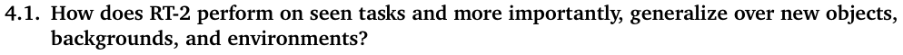
- 4.1. RT-2 在已见任务上的表现如何？更重要的是，它如何泛化到新的物体、背景和环境中？
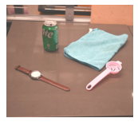
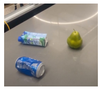
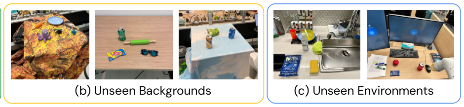
(a) Unseen Objects
核对原版排版
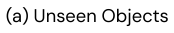
(a) 未见物体
Figure 3 | Example generalization scenarios used for evaluation in Figures 4 and 6b and Tables 4 and 6.
核对原版排版
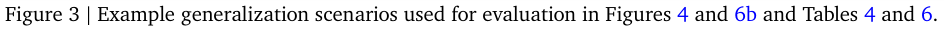
图 3 | 图 4、图 6b 以及表 4、表 6 中用于评估的泛化场景示例。
To evaluate in-distribution performance as well as generalization capabilities, we compare the RT-2-PaLI-X and RT-2-PaLM-E models to the four baselines listed in the previous sections. For the seen tasks category, we use the same suite of seen instructions as in RT-1 (Brohan et al., 2022), which include over 200 tasks in this evaluation: 36 for picking objects, 35 for knocking objects, 35 for placing things upright, 48 for moving objects, 18 for opening and closing various drawers, and 36 for picking out of and placing objects into drawers. Note, however, that these “in-distribution” evaluations still vary the placement of objects and factors such as time of day and robot position, requiring the skills to generalize to realistic variability in the environment.
核对原版排版
为评估分布内（in-distribution）性能以及泛化能力，我们将 RT-2-PaLI-X 和 RT-2-PaLM-E 模型与前文所列的四个基线进行了比较。对于已见任务类别，我们采用了与 RT-1（Brohan et al., 2022）相同的一套已见指令，本次评估涵盖了 200 多个任务：36 个抓取物体任务、35 个碰倒物体任务、35 个将物体竖立放置任务、48 个移动物体任务、18 个开闭各类抽屉任务，以及 36 个从抽屉中取出和放入物体的任务。然而需要注意的是，这些“分布内”评估仍然会改变物体的摆放位置以及一天中的时间、机器人位置等因素，这就要求各项技能能够泛化到环境中真实的变动性中。
第 8 页Page 8PDF p.8
Figure 3 shows example generalization evaluations, which are split into unseen categories ( objects , backgrounds and environments ), and are additionally split into easy and hard cases. For unseen objects, hard cases include harder-to-grasp and more unique objects (such as toys). For unseen backgrounds, hard cases include more varied backgrounds and novel objects. Lastly, for unseen environments, hard cases correspond to a more visually distinct office desk environment with monitors and accessories, while the easier environment is a kitchen sink. These evaluations consists of over 280 tasks that focus primarily on pick and placing skills in many diverse scenarios. The list of instructions for unseen categories is specified in Appendix F.2.
核对原版排版
图 3 展示了泛化评估的示例场景，这些场景被划分为未见类别（物体、背景和环境），并进一步细分为简单和困难两类情形。对于未见物体，困难情形包括更难抓取且形态更独特的物体（例如玩具）。对于未见背景，困难情形包括更多样化的背景以及新颖物体。最后，对于未见环境，困难情形对应于在视觉上有显著差异、带有显示器和配件的办公桌环境，而较简单的环境则是厨房水槽。这些评估包含 280 多个任务，主要侧重于在多种多样场景下的抓取与放置技能。未见类别的指令列表在附录 F.2 中给出。
Figure 4 | Overall performance of two instantiations of RT-2 and baselines across seen training tasks as well as unseen evaluations measuring generalization to novel objects, novel backgrounds, and novel environments. Appendix Table 4 details the full results.
核对原版排版
图 4 | RT-2 的两个实例化模型与各基线在已见训练任务以及衡量对新物体、新背景和新环境泛化能力的未见评估上的整体表现。附录表 4 详细列出了全部结果。
The evaluation results are shown in Figure 4 and Appendix Table 4. The performance on seen tasks is similar between the RT-2 models and RT-1, with other baselines attaining a lower success rate. The difference between the RT-2 models and the baseline is most pronounced in the various generalization experiments, suggesting that the strength of vision-language-action models lies in transferring more generalizable visual and semantic concepts from their Internet-scale pretraining data. Here, on average, both instantiations of RT-2 perform similarly, resulting in ∼2x improvement over the next two baselines, RT-1 and MOO, and ∼6x better than the other baselines. The PaLM-E version of RT-2 seems to perform better than the RT-2-PaLI-X in harder versions of generalization scenarios while under-performing on easier ones, resulting in a similar average performance.
核对原版排版
评估结果如图 4 和附录表 4 所示。在已见任务上，RT-2 模型与 RT-1 的表现相近，而其他基线的成功率较低。RT-2 模型与基线之间的差距在各类泛化实验中最为显著，这表明视觉-语言-动作模型的优势在于能够从其互联网规模的预训练数据中迁移更具泛化性的视觉和语义概念。在此类实验中，平均而言，RT-2 的两个实例化模型表现相近，相较于紧随其后的两个基线 RT-1 和 MOO 取得了约 2 倍的提升，且比其他基线好约 6 倍。RT-2 的 PaLM-E 版本在更难的泛化场景中似乎比 RT-2-PaLI-X 表现更好，但在较简单场景中表现稍逊，因此两者的平均性能相当。
Open Source Language Table Benchmark. To provide an additional point of comparison using open-source baselines and environments, we leverage the open-source Language-Table simulation environment from Lynch et al. (2022). We co-fine-tune a smaller PaLI 3B model on several prediction tasks, including in-domain VQA tasks, for the Language-Table dataset, and evaluate the resulting policy in simulation. For the action prediction task, we discretize and encode actions as text in the format “ `X Y` ”, where `X` and `Y` range between {-10, -9, ..., +9, +10}, and represent delta 2D cartesian setpoints of the end effector. Due to its reduced size, the resulting model can run inference at a similar rate (5 Hz) as the other baselines. The results of this experiment are presented in Table 1. We observe a significant performance boost when using our model compared to the baselines, indicating that the VLM-based pre-training together with the expressiveness of the large PaLI model can be beneficial in other scenarios, in this case, simulation with a different robot. We also show qualitative real-world out-of-distribution behaviors behaviors in Figure 5, demonstrating novel pushing tasks and targeting objects not before seen in this environment. More details about the Language Table experiments can be found in Appendix B and D.
核对原版排版
开源 Language-Table 基准。为了借助开源基线和环境提供额外的对比参照，我们采用了 Lynch et al. (2022) 的开源 Language-Table 仿真环境。我们在 Language-Table 数据集的多项预测任务（包括领域内 VQA 任务）上联合微调了一个较小的 PaLI 3B 模型，并在仿真中评估所生成的策略。对于动作预测任务，我们将动作离散化并编码为“ `X Y` ”格式的文本，其中 `X` 与 `Y` 的取值范围在 {-10, -9, ..., +9, +10} 之间，代表末端执行器的 2D 笛卡尔增量设定点。由于参数规模减小，所得模型能够以与其他基线相近的频率（5 Hz）进行推理。该实验的结果见表 1。与各基线相比，使用我们的模型带来了显著的性能提升，这表明基于 VLM 的预训练配合大型 PaLI 模型的表征能力在其他场景中同样有益（在此例中为采用不同机器人的仿真环境）。我们还在图 5 中展示了定性的真实世界分布外行为，展现了新颖的推操作任务以及针对该环境中此前未见物体的操作。关于 Language Table 实验的更多细节可在附录 B 和 D 中找到。
4.2. Can we observe and measure any emergent capabilities of RT-2?
核对原版排版
4.2. 我们能否观察并评估 RT-2 的任何涌现能力？
In addition to evaluating the generalization capabilities of vision-language-action models, we also aim to evaluate the degree to which such models can enable new capabilities beyond those demonstrated
核对原版排版
除了评估视觉-语言-动作模型的泛化能力外，我们还旨在评估此类模型在多大程度上能够赋予超出所展示演示的全新能力
第 9 页Page 9PDF p.9
Table 1 | Performance on the simulated Language-Table tasks (Lynch and Sermanet, 2020).
核对原版排版
表 1 | 在仿真 Language-Table 任务上的性能（Lynch and Sermanet, 2020）。
Figure 5 | Real-world out-of-distribution behaviors in the Language Table environment. Identical RT-2-PaLI-3B model checkpoint is used as in Tab. 1.
核对原版排版
图 5 | Language Table 环境中的真实世界分布外行为。采用了与 Tab. 1 相同的 RT-2-PaLI-3B 模型检查点。
in the robot data by transferring knowledge from the web. We refer to such capabilities as emergent , in the sense that they emerge by transferring Internet-scale pretraining. We do not expect such transfer to enable new robotic motions , but we do expect semantic and visual concepts, including relations and nouns, to transfer effectively, even in cases where those concepts were not seen in the robot data.
核对原版排版
在机器人数据中通过从网络迁移知识来实现。我们将此类能力称为涌现能力，其含义是它们通过迁移互联网规模的预训练而涌现出来。我们并不指望这种迁移能够实现新的机器人运动动作，但我们确实期望包括关系和名词在内的语义与视觉概念能够有效迁移，即使在机器人数据中未曾见过这些概念也是如此。
Qualitative Evaluations. First, we experiment with our RT-2-PaLI-X model to determine various emergent capabilities transferred from vision-language concepts. We demonstrate some examples of such interactions in Figure 2. We find through our explorations that RT-2 inherits novel capabilities in terms of semantic understanding and basic reasoning in the context of the scene. For example accomplishing the task “put strawberry into the correct bowl” requires a nuanced understanding of not only what a strawberry and bowl are, but also reasoning in the context the scene to know the strawberry should go with the like fruits. For the task “pick up the bag about to fall off the table,” RT-2 demonstrates physical understanding to disambiguate between two bags and recognize the precariously placed object. All the interactions tested in these scenarios have never been seen in the robot data, which points to the transfer of semantic knowledge from vision-language data.
核对原版排版
定性评估。首先，我们使用 RT-2-PaLI-X 模型进行实验，以确定从视觉-语言概念中迁移而来的各种涌现能力。我们在图 2 中展示了此类交互的一些示例。通过探索我们发现，RT-2 继承了在场景上下文中的语义理解与基本推理方面的新能力。例如，完成“put strawberry into the correct bowl”（把草莓放进正确的碗里）这一任务，不仅需要细致理解什么是草莓和碗，还需要结合场景上下文进行推理，从而知晓草莓应当与同类水果放在一起。对于“pick up the bag about to fall off the table”（拿起即将从桌上掉落的袋子）这一任务，RT-2 展现了物理理解能力，能够消除两个袋子之间的歧义并识别出放置位置不稳定的物体。在这些场景中测试的所有交互均未曾出现在机器人数据中，这表明语义知识成功从视觉-语言数据中得到了迁移。
Quantitative Evaluations. To quantify these emergent capabilities, we take the top two baselines from the previous evaluations, RT-1 and VC-1, and compare them against our two models: RT-2-PaLI-X and RT-2-PaLM-E. To reduce the variance of these experiment, we evaluate all of the methods using the A/B testing framework (Fisher, 1936), where all four models are evaluated one after another in the exact same conditions.
核对原版排版
定量评估。为了量化这些涌现能力，我们选取了前述评估中表现最好的两个基线模型 RT-1 和 VC-1，并将它们与我们的两个模型 RT-2-PaLI-X 和 RT-2-PaLM-E 进行对比。为了减小这些实验的方差，我们采用 A/B 测试框架 (Fisher, 1936) 对所有方法进行评估，即在完全相同的条件下依次对所有四种模型进行测试。
We’ split the emergent capabilities of RT-2 into three categories covering axes of reasoning and semantic understanding (with examples of each shown in Appendix Figure 8). The first we term symbol understanding , which explicitly tests whether the RT-2 policy transfers semantic knowledge from vision-language pretraining that was not present in any of the robot data. Example instructions in this category are “move apple to 3” or “push coke can on top of heart”. The second category we term reasoning , which demonstrates the ability to apply various aspects of reasoning of the underlying VLM to control tasks. These tasks require visual reasoning (“move the apple to cup with same color”), math (“move X near the sum of two plus one”), and multilingual understanding (“mueve la manzana al vaso verde”). We refer to the last category as human recognition tasks, which include tasks such as “move the coke can to the person with glasses”, to demonstrate human-centric understanding and recognition. The full list of instructions used for this evaluation is specified in Appendix F.2.
核对原版排版
我们将 RT-2 的涌现能力划分为涵盖推理与语义理解维度的三个类别（各类别的示例见附录图 8）。第一类我们称之为符号理解（symbol understanding），它明确检验 RT-2 策略是否从视觉-语言预训练中迁移了在任何机器人数据中均不存在的语义知识。该类别中的示例指令包括“move apple to 3”（将苹果移动到 3）或“push coke can on top of heart”（将可乐罐推到心形图案上方）。第二类我们称之为推理（reasoning），展示了将底层 VLM 的各方面推理能力应用于控制任务的能力。这些任务需要视觉推理（“move the apple to cup with same color”，将苹果移到相同颜色的杯中）、数学计算（“move X near the sum of two plus one”，将 X 移到二加一之和的附近）以及多语言理解（“mueve la manzana al vaso verde”）。最后一类我们称为人类识别任务（human recognition tasks），包括“move the coke can to the person with glasses”（将可乐罐移给戴眼镜的人）等任务，用以展示以人为中心的理解与识别能力。用于本次评估的完整指令列表详见附录 F.2。
We present the results of this experiment in Figure 6a with all the numerical results in Appendix H.2. We observe that our VLA models significantly outperform the baselines across all categories, with our best RT-2-PaLI-X model achieving more than 3x average success rate over the next best baseline (RT-1). We also note that while the larger PaLI-X-based model results in better symbol understanding, reasoning and person recognition performance on average, the smaller PaLM-E-based model has an edge on tasks that involve math reasoning. We attribute this interesting result to the different pre-training mixture used in PaLM-E, which results in a model that is more capable at math calculation than the mostly visually pre-trained PaLI-X.
核对原版排版
我们在图 6a 中展示了该实验的结果，完整的数值结果见附录 H.2。我们观察到，我们的 VLA 模型在所有类别上均显著优于基线模型，其中表现最好的 RT-2-PaLI-X 模型的平均成功率达到次优基线 (RT-1) 的 3 倍以上。我们还注意到，尽管基于 PaLI-X 的较大模型在符号理解、推理以及人物识别方面平均表现更优，但基于 PaLM-E 的较小模型在涉及数学推理的任务上更具优势。我们将这一有趣的结果归因于 PaLM-E 所采用的不同预训练混合数据，这使得该模型相比主要侧重视觉预训练的 PaLI-X 在数学计算方面能力更强。
第 10 页Page 10PDF p.10
(a) Performance comparison on various emergent skill evalu-(b) Ablations of RT-2-PaLI-X showcasing the impact of paramations (Figure 8) between RT-2 and two baselines. eter count and training strategy on generalization.
核对原版排版
(a) RT-2 与两个基线在各项涌现技能评估（图 8）中的性能对比。(b) RT-2-PaLI-X 的消融实验，展示参数量和训练策略对泛化性能的影响。
Figure 6 | Quantitative performance of RT-2 across (6a) emergent skills and (6b) size and training ablations. Appendix Tables 5 and 6 detail the full numerical results.
核对原版排版
图 6 | RT-2 在 (6a) 涌现技能以及 (6b) 模型规模与训练消融实验中的定量性能。附录表 5 和表 6 详细列出了完整的数值结果。
4.3. How does the generalization vary with parameter count and other design decisions?
核对原版排版
4.3. 泛化能力如何随参数量及其他设计决策发生变化？
For this comparison, we use RT-2-PaLI-X model because of its flexibility in terms of the model size (due to the nature of PaLM-E, RT-2-PaLM-E is restricted to only certain sizes of PaLM and ViT models). In particular, we compare two different model sizes, 5B and 55B, as well as three different training routines: training a model from scratch, without using any weights from the VLM pre-training; fine-tuning a pre-trained model using robot action data only; and co-fine-tuning (co-training with fine-tuning), the primary method used in this work where we use both the original VLM training data as well as robotic data for VLM fine-tuning. Since we are mostly interested in the generalization aspects of these models, we remove the seen tasks evaluation from this set of experiments.
核对原版排版
在此次对比中，我们采用了 RT-2-PaLI-X 模型，因为其在模型规模方面具有灵活性（受 PaLM-E 自身特性的限制，RT-2-PaLM-E 仅局限于 PaLM 和 ViT 模型的特定尺寸）。具体而言，我们对比了两种不同的模型规模（5B 和 55B），以及三种不同的训练方案：从零开始训练模型，不使用来自 VLM 预训练的任何权重；仅使用机器人动作数据对预训练模型进行微调；以及联合微调（co-fine-tuning，即协同训练与微调相结合），这是本工作采用的主要方法，即同时使用原始 VLM 训练数据和机器人数据进行 VLM 微调。由于我们主要关注这些模型的泛化特性，因此在这一组实验中去掉了对已见任务（seen tasks）的评估。
The results of the ablations are presented in Figure 6b and Appendix Table 6. First, we observe that training a very large model from scratch results in a very poor performance even for the 5B model. Given this result, we decide to skip the evaluation of an even bigger 55B PaLI-X model when trained from scratch. Second, we notice that co-fine-tuning a model (regardless of its size) results in a better generalization performance than simply fine-tuning it with robotic data. We attribute this to the fact that keeping the original data around the fine-tuning part of training, allows the model to not forget its previous concepts learned during the VLM training. Lastly, somewhat unsurprisingly, we notice that the increased size of the model results in a better generalization performance.
核对原版排版
消融实验的结果展示在图 6b 和附录表 6 中。首先，我们观察到从零开始训练超大模型会导致极差的性能，即便是 5B 模型也是如此。鉴于这一结果，我们决定在从零开始训练的设定下跳过对规模更大的 55B PaLI-X 模型的评估。其次，我们注意到（无论模型大小）联合微调模型的泛化表现均优于仅使用机器人数据进行微调。我们将此归因于在微调训练阶段保留原始数据，能使模型不遗忘先前在 VLM 训练期间学到的概念。最后，在情理之中的是，我们注意到增大模型规模会带来更好的泛化性能。
4.4. Can RT-2 exhibit signs of chain-of-thought reasoning similarly to vision-language models?
核对原版排版
4.4. RT-2 是否能表现出类似于视觉-语言模型的思维链推理迹象？
Inspired by the chain-of-thought prompting method in LLMs (Wei et al., 2022), we fine-tune a variant of RT-2 with PaLM-E for just a few hundred gradient steps to increase its capability of utilizing language and actions jointly with the hope that it will elicit a more sophisticated reasoning behavior. We augment the data to include an additional “Plan” step, which describes the purpose of the action that the robot is about to take in natural language first, which is then followed by the actual action tokens, e.g. “Instruction: I’m hungry. Plan: pick rxbar chocolate. Action: 1 128 124 136 121 158 111 255.” This data augmentation scheme acts as a bridge between VQA datasets (visual reasoning) and manipulation datasets (generating actions).
核对原版排版
受大语言模型 (LLM) 中思维链提示方法 (Wei et al., 2022) 的启发，我们仅对结合 PaLM-E 的 RT-2 变体进行了数百个梯度步的微调，以增强其联合利用语言与动作的能力，并期望借此激发出更为复杂的推理行为。我们对数据进行了增强，加入了一个额外的“Plan”（规划）步骤：首先用自然语言描述机器人即将执行动作的目的，随后输出实际的动作 token，例如“Instruction: I’m hungry. Plan: pick rxbar chocolate. Action: 1 128 124 136 121 158 111 255”。这种数据增强方案构成了视觉问答 (VQA) 数据集（视觉推理）与操作数据集（生成动作）之间的桥梁。
We qualitatively observe that RT-2 with chain-of-thought reasoning is able to answer more sophisticated commands due to the fact that it is given a place to plan its actions in natural language first. This is a promising direction that provides some initial evidence that using LLMs or VLMs as planners (Ahn et al., 2022; Driess et al., 2023) can be combined with low-level policies in a single VLA model. Rollouts of RT-2 with chain-of-thought reasoning are shown in Figure 7 and in Appendix I.
核对原版排版
我们定性观察到，具备思维链推理能力的 RT-2 能够响应更复杂的指令，这是因为它可以先用自然语言对动作进行规划。这是一个很有前景的方向，提供了一些初步证据，表明将 LLM 或 VLM 用作规划器 (Ahn et al., 2022; Driess et al., 2023) 可以与底层策略结合在单个 VLA 模型中。RT-2 结合思维链推理的 rollout（轨迹展开）展示在图 7 和附录 I 中。
第 11 页Page 11PDF p.11
Prompt: Prompt: Prompt: Prompt: Given Instruction: Given Instruction: Given Instruction: Given Instruction: Bring me a drink. Move all the objects Pick the object that is Move the green objects Prediction: together. different from all other together. Plan: pick 7up can. Prediction: objects Prediction: Action: 1 143 129 123 145 Plan: move green can near Prediction: Plan: move green can near 114 115 127 green rice chip bag. Plan: pick rxbar green rice chip bag. Action: 1 128 126 127 135 chocolate. Action: 1 128 Action: 1 130 129 121 131 123 119 127 129 125 131 125 128 127 127 128 127 Prompt: Given I need to hammer a nail, what object from the scene might be useful? Prediction: Rocks. Action: 1 129 138 122 132 135 106 127
核对原版排版
提示：给定指令：给我拿一杯饮料（Bring me a drink）。预测：计划：拿七喜易拉罐（pick 7up can）。动作：1 143 129 123 145 114 115 127。提示：给定指令：将所有物体移到一起（Move all the objects together）。预测：计划：将绿色易拉罐移到绿色大米脆片袋附近（move green can near green rice chip bag）。动作：1 128 126 127 135 123 119 127。提示：给定指令：挑选与其他所有物体都不同的物体（Pick the object that is different from all other objects）。预测：计划：拿 rxbar 巧克力（pick rxbar chocolate）。动作：1 128 129 125 131 125 128 127。提示：给定指令：将绿色物体移到一起（Move the green objects together）。预测：计划：将绿色易拉罐移到绿色大米脆片袋附近（move green can near green rice chip bag）。动作：1 130 129 121 131 127 128 127。提示：给定“我需要钉一颗钉子，场景中的什么物体可能有用？”（Given I need to hammer a nail, what object from the scene might be useful?）预测：石头（Rocks）。动作：1 129 138 122 132 135 106 127。
Figure 7 | Rollouts of RT-2 with chain-of-thought reasoning, where RT-2 generates both a plan and an action.
核对原版排版
图 7 | 具有思维链推理能力的 RT-2 的 rollout（轨迹展开），其中 RT-2 同时生成规划与动作。
5. Limitations
核对原版排版
5. 局限性
Even though RT-2 exhibits promising generalization properties, there are multiple limitations of this approach. First, although we show that including web-scale pretraining via VLMs boosts generalization over semantic and visual concepts, the robot does not acquire any ability to perform new motions by virtue of including this additional experience. The model’s physical skills are still limited to the distribution of skills seen in the robot data (see Appendix G), but it learns to deploy those skills in new ways. We believe this is a result of the dataset not being varied enough along the axes of skills. An exciting direction for future work is to study how new skills could be acquired through new data collection paradigms such as videos of humans.
核对原版排版
尽管 RT-2 展现出了令人鼓舞的泛化特性，但该方法仍存在若干局限性。首先，虽然我们表明通过 VLM 引入网络规模的预训练能提升对语义和视觉概念的泛化能力，但机器人并不会仅仅因为引入了这些额外经验就获得执行新动作的能力。模型的物理技能依然局限于机器人数据中所见技能的分布范围（见附录 G），不过它学会了以全新的方式运用这些技能。我们认为这是由于数据集在技能维度上的多样性不足所致。未来工作一个令人兴奋的方向是，研究如何通过人类视频等新型数据收集范式来获取新技能。
Second, although we showed we could run large VLA models in real time, the computation cost of these models is high, and as these methods are applied to settings that demand high-frequency control, real-time inference may become a major bottleneck. An exciting direction for future research is to explore quantization and distillation techniques that might enable such models to run at higher rates or on lower-cost hardware. This is also connected to another current limitation in that there are only a small number of generally available VLM models that can be used to create RT-2. We hope that more open-sourced models will become available (e.g. `https://llava-vl.github.io/` ) and the proprietary ones will open up their fine-tuning APIs, which is a sufficient requirement to build VLA models.
核对原版排版
其次，尽管我们展示了可以实时运行大型 VLA 模型，但这些模型的计算成本很高；当这些方法应用于需要高频控制的场景时，实时推理可能会成为主要瓶颈。未来研究的一个令人兴奋的方向是探索量化与蒸馏技术，使此类模型能够以更高的频率运行或在成本更低的硬件上运行。这也与当前的另一项局限性相关，即目前只有少数通用的可用 VLM 模型可用于构建 RT-2。我们希望未来能出现更多开源模型（例如 `https://llava-vl.github.io/` ），并且专有模型能够开放其微调 API，这是构建 VLA 模型的充分条件。
6. Conclusions
核对原版排版
6. 结论
In this paper, we described how vision-language-action (VLA) models could be trained by combining vision-language model (VLM) pretraining with robotic data. We then presented two instantiations of VLAs based on PaLM-E and PaLI-X, which we call RT-2-PaLM-E and RT-2-PaLI-X. These models are cofine-tuned with robotic trajectory data to output robot actions, which are represented as text tokens. We showed that our approach results in very performant robotic policies and, more importantly, leads to a significantly better generalization performance and emergent capabilities inherited from
核对原版排版
在本文中，我们阐述了如何通过将视觉-语言模型 (VLM) 预训练与机器人数据相结合来训练视觉-语言-动作 (VLA) 模型。随后，我们给出了基于 PaLM-E 和 PaLI-X 的两种 VLA 具体实现，分别称为 RT-2-PaLM-E 与 RT-2-PaLI-X。这些模型与机器人轨迹数据进行联合微调，以输出表示为文本 token 的机器人动作。我们表明，我们的方法构建出了性能出色的机器人策略，更重要的是，带来了显著提升的泛化性能以及继承自
第 12 页Page 12PDF p.12
web-scale vision-language pretraining. We believe that this simple and general approach shows a promise of robotics directly benefiting from better vision-language models, which puts the field of robot learning in a strategic position to further improve with advancements in other fields.
核对原版排版
网络规模视觉-语言预训练的涌现能力。我们相信，这种简洁而通用的方法展现了机器人学直接受益于更优视觉-语言模型的前景，这也使机器人学习领域处于能够随着其他领域的进步而不断提升的有利战略地位。
Acknowledgments
核对原版排版
致谢
We would like to acknowledge Fred Alcober, Jodi Lynn Andres, Carolina Parada, Joseph Dabis, Rochelle Dela Cruz, Jessica Gomez, Gavin Gonzalez, John Guilyard, Tomas Jackson, Jie Tan, Scott Lehrer, Dee M, Utsav Malla, Sarah Nguyen, Jane Park, Emily Perez, Elio Prado, Jornell Quiambao, Clayton Tan, Jodexty Therlonge, Eleanor Tomlinson, Wenxuan Zhou, and the greater Google DeepMind team for their feedback and contributions.
核对原版排版
我们谨向 Fred Alcober、Jodi Lynn Andres、Carolina Parada、Joseph Dabis、Rochelle Dela Cruz、Jessica Gomez、Gavin Gonzalez、John Guilyard、Tomas Jackson、Jie Tan、Scott Lehrer、Dee M、Utsav Malla、Sarah Nguyen、Jane Park、Emily Perez、Elio Prado、Jornell Quiambao、Clayton Tan、Jodexty Therlonge、Eleanor Tomlinson、Wenxuan Zhou 以及更广泛的 Google DeepMind 团队表示感谢，感谢他们的反馈与贡献。
第 13 页Page 13PDF p.13
References
核对原版排版
References
- M. Ahn, A. Brohan, N. Brown, Y. Chebotar, O. Cortes, B. David, C. Finn, K. Gopalakrishnan, K. Hausman, A. Herzog, et al. Do as I can, not as I say: Grounding language in robotic affordances. arXiv preprint arXiv:2204.01691 , 2022.
核对原版排版
- M. Ahn, A. Brohan, N. Brown, Y. Chebotar, O. Cortes, B. David, C. Finn, K. Gopalakrishnan, K. Hausman, A. Herzog, et al. Do as I can, not as I say: Grounding language in robotic affordances. arXiv preprint arXiv:2204.01691 , 2022.
- J.-B. Alayrac, J. Donahue, P. Luc, A. Miech, I. Barr, Y. Hasson, K. Lenc, A. Mensch, K. Millican, M. Reynolds, et al. Flamingo: a visual language model for few-shot learning. arXiv preprint arXiv:2204.14198 , 2022.
核对原版排版
- J.-B. Alayrac, J. Donahue, P. Luc, A. Miech, I. Barr, Y. Hasson, K. Lenc, A. Mensch, K. Millican, M. Reynolds, et al. Flamingo: a visual language model for few-shot learning. arXiv preprint arXiv:2204.14198 , 2022.
- R. Anil, A. M. Dai, O. Firat, M. Johnson, D. Lepikhin, A. Passos, S. Shakeri, E. Taropa, P. Bailey, Z. Chen, et al. Palm 2 technical report. arXiv preprint arXiv:2305.10403 , 2023.
核对原版排版
- R. Anil, A. M. Dai, O. Firat, M. Johnson, D. Lepikhin, A. Passos, S. Shakeri, E. Taropa, P. Bailey, Z. Chen, et al. Palm 2 technical report. arXiv preprint arXiv:2305.10403 , 2023.
- A. Brohan, N. Brown, J. Carbajal, Y. Chebotar, J. Dabis, C. Finn, K. Gopalakrishnan, K. Hausman, A. Herzog, J. Hsu, et al. Rt-1: Robotics transformer for real-world control at scale. arXiv preprint arXiv:2212.06817 , 2022.
核对原版排版
- A. Brohan, N. Brown, J. Carbajal, Y. Chebotar, J. Dabis, C. Finn, K. Gopalakrishnan, K. Hausman, A. Herzog, J. Hsu, et al. Rt-1: Robotics transformer for real-world control at scale. arXiv preprint arXiv:2212.06817 , 2022.
- T. Brown, B. Mann, N. Ryder, M. Subbiah, J. D. Kaplan, P. Dhariwal, A. Neelakantan, P. Shyam, G. Sastry, A. Askell, et al. Language models are few-shot learners. Advances in neural information processing systems , 33:1877–1901, 2020.
核对原版排版
- T. Brown, B. Mann, N. Ryder, M. Subbiah, J. D. Kaplan, P. Dhariwal, A. Neelakantan, P. Shyam, G. Sastry, A. Askell, et al. Language models are few-shot learners. Advances in neural information processing systems , 33:1877–1901, 2020.
- D. Cer, Y. Yang, S. Kong, N. Hua, N. Limtiaco, R. S. John, N. Constant, M. Guajardo-Cespedes, S. Yuan, C. Tar, Y. Sung, B. Strope, and R. Kurzweil. Universal sentence encoder. CoRR , abs/1803.11175, 2018. URL `http://arxiv.org/abs/1803.11175` .
核对原版排版
- D. Cer, Y. Yang, S. Kong, N. Hua, N. Limtiaco, R. S. John, N. Constant, M. Guajardo-Cespedes, S. Yuan, C. Tar, Y. Sung, B. Strope, and R. Kurzweil. Universal sentence encoder. CoRR , abs/1803.11175, 2018. URL `http://arxiv.org/abs/1803.11175` .
- M. Chen, J. Tworek, H. Jun, Q. Yuan, H. P. d. O. Pinto, J. Kaplan, H. Edwards, Y. Burda, N. Joseph, G. Brockman, et al. Evaluating large language models trained on code. arXiv preprint arXiv:2107.03374 , 2021.
核对原版排版
- M. Chen, J. Tworek, H. Jun, Q. Yuan, H. P. d. O. Pinto, J. Kaplan, H. Edwards, Y. Burda, N. Joseph, G. Brockman, et al. Evaluating large language models trained on code. arXiv preprint arXiv:2107.03374 , 2021.
- X. Chen, J. Djolonga, P. Padlewski, B. Mustafa, S. Changpinyo, J. Wu, C. R. Ruiz, S. Goodman, X. Wang, Y. Tay, S. Shakeri, M. Dehghani, D. Salz, M. Lucic, M. Tschannen, A. Nagrani, H. Hu, M. Joshi, B. Pang, C. Montgomery, P. Pietrzyk, M. Ritter, A. Piergiovanni, M. Minderer, F. Pavetic, A. Waters, G. Li, I. Alabdulmohsin, L. Beyer, J. Amelot, K. Lee, A. P. Steiner, Y. Li, D. Keysers, A. Arnab, Y. Xu, K. Rong, A. Kolesnikov, M. Seyedhosseini, A. Angelova, X. Zhai, N. Houlsby, and R. Soricut. Pali-x: On scaling up a multilingual vision and language model, 2023a.
核对原版排版
- X. Chen, J. Djolonga, P. Padlewski, B. Mustafa, S. Changpinyo, J. Wu, C. R. Ruiz, S. Goodman, X. Wang, Y. Tay, S. Shakeri, M. Dehghani, D. Salz, M. Lucic, M. Tschannen, A. Nagrani, H. Hu, M. Joshi, B. Pang, C. Montgomery, P. Pietrzyk, M. Ritter, A. Piergiovanni, M. Minderer, F. Pavetic, A. Waters, G. Li, I. Alabdulmohsin, L. Beyer, J. Amelot, K. Lee, A. P. Steiner, Y. Li, D. Keysers, A. Arnab, Y. Xu, K. Rong, A. Kolesnikov, M. Seyedhosseini, A. Angelova, X. Zhai, N. Houlsby, and R. Soricut. Pali-x: On scaling up a multilingual vision and language model, 2023a.
- X. Chen, X. Wang, S. Changpinyo, A. Piergiovanni, P. Padlewski, D. Salz, S. Goodman, A. Grycner, B. Mustafa, L. Beyer, A. Kolesnikov, J. Puigcerver, N. Ding, K. Rong, H. Akbari, G. Mishra, L. Xue, A. Thapliyal, J. Bradbury, W. Kuo, M. Seyedhosseini, C. Jia, B. K. Ayan, C. Riquelme, A. Steiner, A. Angelova, X. Zhai, N. Houlsby, and R. Soricut. Pali: A jointly-scaled multilingual language-image model, 2023b.
核对原版排版
- X. Chen, X. Wang, S. Changpinyo, A. Piergiovanni, P. Padlewski, D. Salz, S. Goodman, A. Grycner, B. Mustafa, L. Beyer, A. Kolesnikov, J. Puigcerver, N. Ding, K. Rong, H. Akbari, G. Mishra, L. Xue, A. Thapliyal, J. Bradbury, W. Kuo, M. Seyedhosseini, C. Jia, B. K. Ayan, C. Riquelme, A. Steiner, A. Angelova, X. Zhai, N. Houlsby, and R. Soricut. Pali: A jointly-scaled multilingual language-image model, 2023b.
- K. Cobbe, V. Kosaraju, M. Bavarian, M. Chen, H. Jun, L. Kaiser, M. Plappert, J. Tworek, J. Hilton, R. Nakano, et al. Training verifiers to solve math word problems. arXiv preprint arXiv:2110.14168 , 2021.
核对原版排版
- K. Cobbe, V. Kosaraju, M. Bavarian, M. Chen, H. Jun, L. Kaiser, M. Plappert, J. Tworek, J. Hilton, R. Nakano, et al. Training verifiers to solve math word problems. arXiv preprint arXiv:2110.14168 , 2021.
- Z. J. Cui, Y. Wang, N. Muhammad, L. Pinto, et al. From play to policy: Conditional behavior generation from uncurated robot data. arXiv preprint arXiv:2210.10047 , 2022.
核对原版排版
- Z. J. Cui, Y. Wang, N. Muhammad, L. Pinto, et al. From play to policy: Conditional behavior generation from uncurated robot data. arXiv preprint arXiv:2210.10047 , 2022.
- S. Dasari and A. Gupta. Transformers for one-shot visual imitation. In Conference on Robot Learning , pages 2071–2084. PMLR, 2021.
核对原版排版
- S. Dasari and A. Gupta. Transformers for one-shot visual imitation. In Conference on Robot Learning , pages 2071–2084. PMLR, 2021.
- S. Dasari, F. Ebert, S. Tian, S. Nair, B. Bucher, K. Schmeckpeper, S. Singh, S. Levine, and C. Finn. Robonet: Large-scale multi-robot learning. In Conference on Robot Learning , 2019.
核对原版排版
- S. Dasari, F. Ebert, S. Tian, S. Nair, B. Bucher, K. Schmeckpeper, S. Singh, S. Levine, and C. Finn. Robonet: Large-scale multi-robot learning. In Conference on Robot Learning , 2019.
第 14 页Page 14PDF p.14
- M. Dehghani, J. Djolonga, B. Mustafa, P. Padlewski, J. Heek, J. Gilmer, A. Steiner, M. Caron, R. Geirhos, I. Alabdulmohsin, R. Jenatton, L. Beyer, M. Tschannen, A. Arnab, X. Wang, C. Riquelme, M. Minderer, J. Puigcerver, U. Evci, M. Kumar, S. van Steenkiste, G. F. Elsayed, A. Mahendran, F. Yu, A. Oliver, F. Huot, J. Bastings, M. P. Collier, A. Gritsenko, V. Birodkar, C. Vasconcelos, Y. Tay, T. Mensink, A. Kolesnikov, F. Pavetić, D. Tran, T. Kipf, M. Lučić, X. Zhai, D. Keysers, J. Harmsen, and N. Houlsby. Scaling vision transformers to 22 billion parameters, 2023.
核对原版排版
- M. Dehghani, J. Djolonga, B. Mustafa, P. Padlewski, J. Heek, J. Gilmer, A. Steiner, M. Caron, R. Geirhos, I. Alabdulmohsin, R. Jenatton, L. Beyer, M. Tschannen, A. Arnab, X. Wang, C. Riquelme, M. Minderer, J. Puigcerver, U. Evci, M. Kumar, S. van Steenkiste, G. F. Elsayed, A. Mahendran, F. Yu, A. Oliver, F. Huot, J. Bastings, M. P. Collier, A. Gritsenko, V. Birodkar, C. Vasconcelos, Y. Tay, T. Mensink, A. Kolesnikov, F. Pavetić, D. Tran, T. Kipf, M. Lučić, X. Zhai, D. Keysers, J. Harmsen, and N. Houlsby. Scaling vision transformers to 22 billion parameters, 2023.
- D. Driess, F. Xia, M. S. Sajjadi, C. Lynch, A. Chowdhery, B. Ichter, A. Wahid, J. Tompson, Q. Vuong, T. Yu, et al. Palm-e: An embodied multimodal language model. arXiv preprint arXiv:2303.03378 , 2023.
核对原版排版
- D. Driess, F. Xia, M. S. Sajjadi, C. Lynch, A. Chowdhery, B. Ichter, A. Wahid, J. Tompson, Q. Vuong, T. Yu, et al. Palm-e: An embodied multimodal language model. arXiv preprint arXiv:2303.03378 , 2023.
- M. Du, S. Nair, D. Sadigh, and C. Finn. Behavior retrieval: Few-shot imitation learning by querying unlabeled datasets. arXiv preprint arXiv:2304.08742 , 2023a.
核对原版排版
- M. Du, S. Nair, D. Sadigh, and C. Finn. Behavior retrieval: Few-shot imitation learning by querying unlabeled datasets. arXiv preprint arXiv:2304.08742 , 2023a.
- Y. Du, K. Konyushkova, M. Denil, A. Raju, J. Landon, F. Hill, N. de Freitas, and S. Cabi. Vision-language models as success detectors. arXiv preprint arXiv:2303.07280 , 2023b.
核对原版排版
- Y. Du, K. Konyushkova, M. Denil, A. Raju, J. Landon, F. Hill, N. de Freitas, and S. Cabi. Vision-language models as success detectors. arXiv preprint arXiv:2303.07280 , 2023b.
- C. Finn and S. Levine. Deep visual foresight for planning robot motion. In 2017 IEEE International Conference on Robotics and Automation (ICRA) , pages 2786–2793. IEEE, 2017.
核对原版排版
- C. Finn and S. Levine. Deep visual foresight for planning robot motion. In 2017 IEEE International Conference on Robotics and Automation (ICRA) , pages 2786–2793. IEEE, 2017.
- C. Finn, T. Yu, T. Zhang, P. Abbeel, and S. Levine. One-shot visual imitation learning via meta-learning. In Conference on robot learning , pages 357–368. PMLR, 2017.
核对原版排版
- C. Finn, T. Yu, T. Zhang, P. Abbeel, and S. Levine. One-shot visual imitation learning via meta-learning. In Conference on robot learning , pages 357–368. PMLR, 2017.
- R. A. Fisher. Design of experiments. British Medical Journal , 1(3923):554, 1936.
核对原版排版
- R. A. Fisher. Design of experiments. British Medical Journal , 1(3923):554, 1936.
- S. Y. Gadre, M. Wortsman, G. Ilharco, L. Schmidt, and S. Song. Clip on wheels: Zero-shot object navigation as object localization and exploration. arXiv preprint arXiv:2203.10421 , 2022.
核对原版排版
- S. Y. Gadre, M. Wortsman, G. Ilharco, L. Schmidt, and S. Song. Clip on wheels: Zero-shot object navigation as object localization and exploration. arXiv preprint arXiv:2203.10421 , 2022.
- Z. Gan, L. Li, C. Li, L. Wang, Z. Liu, J. Gao, et al. Vision-language pre-training: Basics, recent advances, and future trends. Foundations and Trends® in Computer Graphics and Vision , 14(3–4):163–352, 2022.
核对原版排版
- Z. Gan, L. Li, C. Li, L. Wang, Z. Liu, J. Gao, et al. Vision-language pre-training: Basics, recent advances, and future trends. Foundations and Trends® in Computer Graphics and Vision , 14(3–4):163–352, 2022.
- G. Ghiasi, X. Gu, Y. Cui, and T.-Y. Lin. Open-vocabulary image segmentation. arXiv preprint arXiv:2112.12143 , 2021.
核对原版排版
- G. Ghiasi, X. Gu, Y. Cui, and T.-Y. Lin. Open-vocabulary image segmentation. arXiv preprint arXiv:2112.12143 , 2021.
- K. Grauman, A. Westbury, E. Byrne, Z. Chavis, A. Furnari, R. Girdhar, J. Hamburger, H. Jiang, M. Liu, X. Liu, M. Martin, T. Nagarajan, I. Radosavovic, S. K. Ramakrishnan, F. Ryan, J. Sharma, M. Wray, M. Xu, E. Z. Xu, C. Zhao, S. Bansal, D. Batra, V. Cartillier, S. Crane, T. Do, M. Doulaty, A. Erapalli, C. Feichtenhofer, A. Fragomeni, Q. Fu, A. Gebreselasie, C. Gonzalez, J. Hillis, X. Huang, Y. Huang, W. Jia, W. Khoo, J. Kolar, S. Kottur, A. Kumar, F. Landini, C. Li, Y. Li, Z. Li, K. Mangalam, R. Modhugu, J. Munro, T. Murrell, T. Nishiyasu, W. Price, P. R. Puentes, M. Ramazanova, L. Sari, K. Somasundaram, A. Southerland, Y. Sugano, R. Tao, M. Vo, Y. Wang, X. Wu, T. Yagi, Z. Zhao, Y. Zhu, P. Arbelaez, D. Crandall, D. Damen, G. M. Farinella, C. Fuegen, B. Ghanem, V. K. Ithapu, C. V. Jawahar, H. Joo, K. Kitani, H. Li, R. Newcombe, A. Oliva, H. S. Park, J. M. Rehg, Y. Sato, J. Shi, M. Z. Shou, A. Torralba, L. Torresani, M. Yan, and J. Malik. Ego4d: Around the world in 3,000 hours of egocentric video, 2022.
核对原版排版
- K. Grauman, A. Westbury, E. Byrne, Z. Chavis, A. Furnari, R. Girdhar, J. Hamburger, H. Jiang, M. Liu, X. Liu, M. Martin, T. Nagarajan, I. Radosavovic, S. K. Ramakrishnan, F. Ryan, J. Sharma, M. Wray, M. Xu, E. Z. Xu, C. Zhao, S. Bansal, D. Batra, V. Cartillier, S. Crane, T. Do, M. Doulaty, A. Erapalli, C. Feichtenhofer, A. Fragomeni, Q. Fu, A. Gebreselasie, C. Gonzalez, J. Hillis, X. Huang, Y. Huang, W. Jia, W. Khoo, J. Kolar, S. Kottur, A. Kumar, F. Landini, C. Li, Y. Li, Z. Li, K. Mangalam, R. Modhugu, J. Munro, T. Murrell, T. Nishiyasu, W. Price, P. R. Puentes, M. Ramazanova, L. Sari, K. Somasundaram, A. Southerland, Y. Sugano, R. Tao, M. Vo, Y. Wang, X. Wu, T. Yagi, Z. Zhao, Y. Zhu, P. Arbelaez, D. Crandall, D. Damen, G. M. Farinella, C. Fuegen, B. Ghanem, V. K. Ithapu, C. V. Jawahar, H. Joo, K. Kitani, H. Li, R. Newcombe, A. Oliva, H. S. Park, J. M. Rehg, Y. Sato, J. Shi, M. Z. Shou, A. Torralba, L. Torresani, M. Yan, and J. Malik. Ego4d: Around the world in 3,000 hours of egocentric video, 2022.
- X. Gu, T.-Y. Lin, W. Kuo, and Y. Cui. Open-vocabulary object detection via vision and language knowledge distillation. arXiv preprint arXiv:2104.13921 , 2021.
核对原版排版
- X. Gu, T.-Y. Lin, W. Kuo, and Y. Cui. Open-vocabulary object detection via vision and language knowledge distillation. arXiv preprint arXiv:2104.13921 , 2021.
- N. Hansen, R. Jangir, Y. Sun, G. Alenyà, P. Abbeel, A. A. Efros, L. Pinto, and X. Wang. Self-supervised policy adaptation during deployment. arXiv preprint arXiv:2007.04309 , 2020.
核对原版排版
- N. Hansen, R. Jangir, Y. Sun, G. Alenyà, P. Abbeel, A. A. Efros, L. Pinto, and X. Wang. Self-supervised policy adaptation during deployment. arXiv preprint arXiv:2007.04309 , 2020.
- Y. Hao, H. Song, L. Dong, S. Huang, Z. Chi, W. Wang, S. Ma, and F. Wei. Language models are general-purpose interfaces. arXiv preprint arXiv:2206.06336 , 2022.
核对原版排版
- Y. Hao, H. Song, L. Dong, S. Huang, Z. Chi, W. Wang, S. Ma, and F. Wei. Language models are general-purpose interfaces. arXiv preprint arXiv:2206.06336 , 2022.
第 15 页Page 15PDF p.15
- F. Hill, S. Mokra, N. Wong, and T. Harley. Human instruction-following with deep reinforcement learning via transfer-learning from text. arXiv preprint arXiv:2005.09382 , 2020.
核对原版排版
- F. Hill, S. Mokra, N. Wong, and T. Harley. Human instruction-following with deep reinforcement learning via transfer-learning from text. arXiv preprint arXiv:2005.09382 , 2020.
- S. Huang, L. Dong, W. Wang, Y. Hao, S. Singhal, S. Ma, T. Lv, L. Cui, O. K. Mohammed, Q. Liu, et al. Language is not all you need: Aligning perception with language models. arXiv preprint arXiv:2302.14045 , 2023.
核对原版排版
- S. Huang, L. Dong, W. Wang, Y. Hao, S. Singhal, S. Ma, T. Lv, L. Cui, O. K. Mohammed, Q. Liu, et al. Language is not all you need: Aligning perception with language models. arXiv preprint arXiv:2302.14045 , 2023.
- W. Huang, P. Abbeel, D. Pathak, and I. Mordatch. Language models as zero-shot planners: Extracting actionable knowledge for embodied agents. In International Conference on Machine Learning , pages 9118–9147. PMLR, 2022.
核对原版排版
- W. Huang, P. Abbeel, D. Pathak, and I. Mordatch. Language models as zero-shot planners: Extracting actionable knowledge for embodied agents. In International Conference on Machine Learning , pages 9118–9147. PMLR, 2022.
- S. James, M. Bloesch, and A. J. Davison. Task-embedded control networks for few-shot imitation learning. In Conference on robot learning , pages 783–795. PMLR, 2018.
核对原版排版
- S. James, M. Bloesch, and A. J. Davison. Task-embedded control networks for few-shot imitation learning. In Conference on robot learning , pages 783–795. PMLR, 2018.
- E. Jang, A. Irpan, M. Khansari, D. Kappler, F. Ebert, C. Lynch, S. Levine, and C. Finn. Bc-z: Zeroshot task generalization with robotic imitation learning. In Conference on Robot Learning , pages 991–1002. PMLR, 2021.
核对原版排版
- E. Jang, A. Irpan, M. Khansari, D. Kappler, F. Ebert, C. Lynch, S. Levine, and C. Finn. Bc-z: Zeroshot task generalization with robotic imitation learning. In Conference on Robot Learning , pages 991–1002. PMLR, 2021.
- Y. Jiang, A. Gupta, Z. Zhang, G. Wang, Y. Dou, Y. Chen, L. Fei-Fei, A. Anandkumar, Y. Zhu, and L. Fan. Vima: General robot manipulation with multimodal prompts. arXiv preprint arXiv:2210.03094 , 2022.
核对原版排版
- Y. Jiang, A. Gupta, Z. Zhang, G. Wang, Y. Dou, Y. Chen, L. Fei-Fei, A. Anandkumar, Y. Zhu, and L. Fan. Vima: General robot manipulation with multimodal prompts. arXiv preprint arXiv:2210.03094 , 2022.
- L. P. Kaelbling. The foundation of efficient robot learning. Science , 369(6506):915–916, 2020.
核对原版排版
- L. P. Kaelbling. The foundation of efficient robot learning. Science , 369(6506):915–916, 2020.
- S. Karamcheti, S. Nair, A. S. Chen, T. Kollar, C. Finn, D. Sadigh, and P. Liang. Language-driven representation learning for robotics. arXiv preprint arXiv:2302.12766 , 2023.
核对原版排版
- S. Karamcheti, S. Nair, A. S. Chen, T. Kollar, C. Finn, D. Sadigh, and P. Liang. Language-driven representation learning for robotics. arXiv preprint arXiv:2302.12766 , 2023.
- A. Kirillov, E. Mintun, N. Ravi, H. Mao, C. Rolland, L. Gustafson, T. Xiao, S. Whitehead, A. C. Berg, W.-Y. Lo, et al. Segment anything. arXiv preprint arXiv:2304.02643 , 2023.
核对原版排版
- A. Kirillov, E. Mintun, N. Ravi, H. Mao, C. Rolland, L. Gustafson, T. Xiao, S. Whitehead, A. C. Berg, W.-Y. Lo, et al. Segment anything. arXiv preprint arXiv:2304.02643 , 2023.
- I. Kostrikov, D. Yarats, and R. Fergus. Image augmentation is all you need: Regularizing deep reinforcement learning from pixels. arXiv preprint arXiv:2004.13649 , 2020.
核对原版排版
- I. Kostrikov, D. Yarats, and R. Fergus. Image augmentation is all you need: Regularizing deep reinforcement learning from pixels. arXiv preprint arXiv:2004.13649 , 2020.
- M. Laskin, K. Lee, A. Stooke, L. Pinto, P. Abbeel, and A. Srinivas. Reinforcement learning with augmented data. Advances in neural information processing systems , 33:19884–19895, 2020a.
核对原版排版
- M. Laskin, K. Lee, A. Stooke, L. Pinto, P. Abbeel, and A. Srinivas. Reinforcement learning with augmented data. Advances in neural information processing systems , 33:19884–19895, 2020a.
- M. Laskin, A. Srinivas, and P. Abbeel. Curl: Contrastive unsupervised representations for reinforcement learning. In International Conference on Machine Learning , pages 5639–5650. PMLR, 2020b.
核对原版排版
- M. Laskin, A. Srinivas, and P. Abbeel. Curl: Contrastive unsupervised representations for reinforcement learning. In International Conference on Machine Learning , pages 5639–5650. PMLR, 2020b.
- S. Levine, P. Pastor, A. Krizhevsky, J. Ibarz, and D. Quillen. Learning hand-eye coordination for robotic grasping with deep learning and large-scale data collection. The International journal of robotics research , 37(4-5):421–436, 2018.
核对原版排版
- S. Levine, P. Pastor, A. Krizhevsky, J. Ibarz, and D. Quillen. Learning hand-eye coordination for robotic grasping with deep learning and large-scale data collection. The International journal of robotics research , 37(4-5):421–436, 2018.
- A. Lewkowycz, A. Andreassen, D. Dohan, E. Dyer, H. Michalewski, V. Ramasesh, A. Slone, C. Anil, I. Schlag, T. Gutman-Solo, et al. Solving quantitative reasoning problems with language models. arXiv preprint arXiv:2206.14858 , 2022.
核对原版排版
- A. Lewkowycz, A. Andreassen, D. Dohan, E. Dyer, H. Michalewski, V. Ramasesh, A. Slone, C. Anil, I. Schlag, T. Gutman-Solo, et al. Solving quantitative reasoning problems with language models. arXiv preprint arXiv:2206.14858 , 2022.
- J. Li, D. Li, S. Savarese, and S. Hoi. Blip-2: Bootstrapping language-image pre-training with frozen image encoders and large language models. arXiv preprint arXiv:2301.12597 , 2023.
核对原版排版
- J. Li, D. Li, S. Savarese, and S. Hoi. Blip-2: Bootstrapping language-image pre-training with frozen image encoders and large language models. arXiv preprint arXiv:2301.12597 , 2023.
- L. H. Li, M. Yatskar, D. Yin, C.-J. Hsieh, and K.-W. Chang. Visualbert: A simple and performant baseline for vision and language. arXiv preprint arXiv:1908.03557 , 2019.
核对原版排版
- L. H. Li, M. Yatskar, D. Yin, C.-J. Hsieh, and K.-W. Chang. Visualbert: A simple and performant baseline for vision and language. arXiv preprint arXiv:1908.03557 , 2019.
- H. Liu, L. Lee, K. Lee, and P. Abbeel. Instruction-following agents with jointly pre-trained visionlanguage models. arXiv preprint arXiv:2210.13431 , 2022.
核对原版排版
- H. Liu, L. Lee, K. Lee, and P. Abbeel. Instruction-following agents with jointly pre-trained visionlanguage models. arXiv preprint arXiv:2210.13431 , 2022.
第 16 页Page 16PDF p.16
- J. Lu, D. Batra, D. Parikh, and S. Lee. Vilbert: Pretraining task-agnostic visiolinguistic representations for vision-and-language tasks. Advances in neural information processing systems , 32, 2019.
核对原版排版
- J. Lu, D. Batra, D. Parikh, and S. Lee. Vilbert: Pretraining task-agnostic visiolinguistic representations for vision-and-language tasks. Advances in neural information processing systems , 32, 2019.
- C. Lynch and P. Sermanet. Language conditioned imitation learning over unstructured data. arXiv preprint arXiv:2005.07648 , 2020.
核对原版排版
- C. Lynch and P. Sermanet. Language conditioned imitation learning over unstructured data. arXiv preprint arXiv:2005.07648 , 2020.
- C. Lynch, A. Wahid, J. Tompson, T. Ding, J. Betker, R. Baruch, T. Armstrong, and P. Florence. Interactive language: Talking to robots in real time. arXiv preprint arXiv:2210.06407 , 2022.
核对原版排版
- C. Lynch, A. Wahid, J. Tompson, T. Ding, J. Betker, R. Baruch, T. Armstrong, and P. Florence. Interactive language: Talking to robots in real time. arXiv preprint arXiv:2210.06407 , 2022.
- Y. J. Ma, S. Sodhani, D. Jayaraman, O. Bastani, V. Kumar, and A. Zhang. Vip: Towards universal visual reward and representation via value-implicit pre-training. arXiv preprint arXiv:2210.00030 , 2022.
核对原版排版
- Y. J. Ma, S. Sodhani, D. Jayaraman, O. Bastani, V. Kumar, and A. Zhang. Vip: Towards universal visual reward and representation via value-implicit pre-training. arXiv preprint arXiv:2210.00030 , 2022.
- Y. J. Ma, W. Liang, V. Som, V. Kumar, A. Zhang, O. Bastani, and D. Jayaraman. Liv: Language-image representations and rewards for robotic control. arXiv preprint arXiv:2306.00958 , 2023.
核对原版排版
- Y. J. Ma, W. Liang, V. Som, V. Kumar, A. Zhang, O. Bastani, and D. Jayaraman. Liv: Language-image representations and rewards for robotic control. arXiv preprint arXiv:2306.00958 , 2023.
- J. Mahler, J. Liang, S. Niyaz, M. Laskey, R. Doan, X. Liu, J. A. Ojea, and K. Goldberg. Dex-net 2.0: Deep learning to plan robust grasps with synthetic point clouds and analytic grasp metrics. arXiv preprint arXiv:1703.09312 , 2017.
核对原版排版
- J. Mahler, J. Liang, S. Niyaz, M. Laskey, R. Doan, X. Liu, J. A. Ojea, and K. Goldberg. Dex-net 2.0: Deep learning to plan robust grasps with synthetic point clouds and analytic grasp metrics. arXiv preprint arXiv:1703.09312 , 2017.
- A. Majumdar, K. Yadav, S. Arnaud, Y. J. Ma, C. Chen, S. Silwal, A. Jain, V.-P. Berges, P. Abbeel, J. Malik, et al. Where are we in the search for an artificial visual cortex for embodied intelligence? arXiv preprint arXiv:2303.18240 , 2023a.
核对原版排版
- A. Majumdar, K. Yadav, S. Arnaud, Y. J. Ma, C. Chen, S. Silwal, A. Jain, V.-P. Berges, P. Abbeel, J. Malik, et al. Where are we in the search for an artificial visual cortex for embodied intelligence? arXiv preprint arXiv:2303.18240 , 2023a.
- A. Majumdar, K. Yadav, S. Arnaud, Y. J. Ma, C. Chen, S. Silwal, A. Jain, V.-P. Berges, P. Abbeel, J. Malik, et al. Where are we in the search for an artificial visual cortex for embodied intelligence? arXiv preprint arXiv:2303.18240 , 2023b.
核对原版排版
- A. Majumdar, K. Yadav, S. Arnaud, Y. J. Ma, C. Chen, S. Silwal, A. Jain, V.-P. Berges, P. Abbeel, J. Malik, et al. Where are we in the search for an artificial visual cortex for embodied intelligence? arXiv preprint arXiv:2303.18240 , 2023b.
- O. Mees, L. Hermann, and W. Burgard. What matters in language conditioned robotic imitation learning over unstructured data. IEEE Robotics and Automation Letters , 7(4):11205–11212, 2022.
核对原版排版
- O. Mees, L. Hermann, and W. Burgard. What matters in language conditioned robotic imitation learning over unstructured data. IEEE Robotics and Automation Letters , 7(4):11205–11212, 2022.
- M. Minderer, A. Gritsenko, A. Stone, M. Neumann, D. Weissenborn, A. Dosovitskiy, A. Mahendran, A. Arnab, M. Dehghani, Z. Shen, et al. Simple open-vocabulary object detection with vision transformers. arXiv preprint arXiv:2205.06230 , 2022.
核对原版排版
- M. Minderer, A. Gritsenko, A. Stone, M. Neumann, D. Weissenborn, A. Dosovitskiy, A. Mahendran, A. Arnab, M. Dehghani, Z. Shen, et al. Simple open-vocabulary object detection with vision transformers. arXiv preprint arXiv:2205.06230 , 2022.
- Y. Mu, Q. Zhang, M. Hu, W. Wang, M. Ding, J. Jin, B. Wang, J. Dai, Y. Qiao, and P. Luo. Embodiedgpt: Vision-language pre-training via embodied chain of thought. arXiv preprint arXiv:2305.15021 , 2023.
核对原版排版
- Y. Mu, Q. Zhang, M. Hu, W. Wang, M. Ding, J. Jin, B. Wang, J. Dai, Y. Qiao, and P. Luo. Embodiedgpt: Vision-language pre-training via embodied chain of thought. arXiv preprint arXiv:2305.15021 , 2023.
- S. Nair, E. Mitchell, K. Chen, S. Savarese, C. Finn, et al. Learning language-conditioned robot behavior from offline data and crowd-sourced annotation. In Conference on Robot Learning , pages 1303–1315. PMLR, 2022a.
核对原版排版
- S. Nair, E. Mitchell, K. Chen, S. Savarese, C. Finn, et al. Learning language-conditioned robot behavior from offline data and crowd-sourced annotation. In Conference on Robot Learning , pages 1303–1315. PMLR, 2022a.
- S. Nair, A. Rajeswaran, V. Kumar, C. Finn, and A. Gupta. R3m: A universal visual representation for robot manipulation. arXiv preprint arXiv:2203.12601 , 2022b.
核对原版排版
- S. Nair, A. Rajeswaran, V. Kumar, C. Finn, and A. Gupta. R3m: A universal visual representation for robot manipulation. arXiv preprint arXiv:2203.12601 , 2022b.
- OpenAI. Gpt-4 technical report, 2023.
核对原版排版
- OpenAI. Gpt-4 technical report, 2023.
- J. Pari, N. M. Shafiullah, S. P. Arunachalam, and L. Pinto. The surprising effectiveness of representation learning for visual imitation. arXiv preprint arXiv:2112.01511 , 2021.
核对原版排版
- J. Pari, N. M. Shafiullah, S. P. Arunachalam, and L. Pinto. The surprising effectiveness of representation learning for visual imitation. arXiv preprint arXiv:2112.01511 , 2021.
- L. Pinto and A. Gupta. Supersizing self-supervision: Learning to grasp from 50k tries and 700 robot hours. In 2016 IEEE international conference on robotics and automation (ICRA) , pages 3406–3413. IEEE, 2016.
核对原版排版
- L. Pinto and A. Gupta. Supersizing self-supervision: Learning to grasp from 50k tries and 700 robot hours. In 2016 IEEE international conference on robotics and automation (ICRA) , pages 3406–3413. IEEE, 2016.
- S. Polu, J. M. Han, K. Zheng, M. Baksys, I. Babuschkin, and I. Sutskever. Formal mathematics statement curriculum learning. arXiv preprint arXiv:2202.01344 , 2022.
核对原版排版
- S. Polu, J. M. Han, K. Zheng, M. Baksys, I. Babuschkin, and I. Sutskever. Formal mathematics statement curriculum learning. arXiv preprint arXiv:2202.01344 , 2022.
第 17 页Page 17PDF p.17
- V. H. Pong, M. Dalal, S. Lin, A. Nair, S. Bahl, and S. Levine. Skew-fit: State-covering self-supervised reinforcement learning. arXiv preprint arXiv:1903.03698 , 2019.
核对原版排版
- V. H. Pong, M. Dalal, S. Lin, A. Nair, S. Bahl, and S. Levine. Skew-fit: State-covering self-supervised reinforcement learning. arXiv preprint arXiv:1903.03698 , 2019.
- A. Radford, J. W. Kim, C. Hallacy, A. Ramesh, G. Goh, S. Agarwal, G. Sastry, A. Askell, P. Mishkin, J. Clark, et al. Learning transferable visual models from natural language supervision. In International Conference on Machine Learning , pages 8748–8763. PMLR, 2021.
核对原版排版
- A. Radford, J. W. Kim, C. Hallacy, A. Ramesh, G. Goh, S. Agarwal, G. Sastry, A. Askell, P. Mishkin, J. Clark, et al. Learning transferable visual models from natural language supervision. In International Conference on Machine Learning , pages 8748–8763. PMLR, 2021.
- S. Reed, K. Zolna, E. Parisotto, S. G. Colmenarejo, A. Novikov, G. Barth-Maron, M. Gimenez, Y. Sulsky, J. Kay, J. T. Springenberg, et al. A generalist agent. arXiv preprint arXiv:2205.06175 , 2022.
核对原版排版
- S. Reed, K. Zolna, E. Parisotto, S. G. Colmenarejo, A. Novikov, G. Barth-Maron, M. Gimenez, Y. Sulsky, J. Kay, J. T. Springenberg, et al. A generalist agent. arXiv preprint arXiv:2205.06175 , 2022.
- M. Ryoo, A. Piergiovanni, A. Arnab, M. Dehghani, and A. Angelova. Tokenlearner: Adaptive space-time tokenization for videos. Advances in Neural Information Processing Systems , 34:12786–12797, 2021.
核对原版排版
- M. Ryoo, A. Piergiovanni, A. Arnab, M. Dehghani, and A. Angelova. Tokenlearner: Adaptive space-time tokenization for videos. Advances in Neural Information Processing Systems , 34:12786–12797, 2021.
- D. Shah, B. Osiński, b. ichter, and S. Levine. Lm-nav: Robotic navigation with large pre-trained models of language, vision, and action. In K. Liu, D. Kulic, and J. Ichnowski, editors, Proceedings of The 6th Conference on Robot Learning , volume 205 of Proceedings of Machine Learning Research , pages 492– 504. PMLR, 14–18 Dec 2023. URL `https://proceedings.mlr.press/v205/shah23b.html` .
核对原版排版
- D. Shah, B. Osiński, b. ichter, and S. Levine. Lm-nav: Robotic navigation with large pre-trained models of language, vision, and action. In K. Liu, D. Kulic, and J. Ichnowski, editors, Proceedings of The 6th Conference on Robot Learning , volume 205 of Proceedings of Machine Learning Research , pages 492– 504. PMLR, 14–18 Dec 2023. URL `https://proceedings.mlr.press/v205/shah23b.html` .
- R. Shah and V. Kumar. Rrl: Resnet as representation for reinforcement learning. arXiv preprint arXiv:2107.03380 , 2021.
核对原版排版
- R. Shah and V. Kumar. Rrl: Resnet as representation for reinforcement learning. arXiv preprint arXiv:2107.03380 , 2021.
- M. Shridhar, L. Manuelli, and D. Fox. Cliport: What and where pathways for robotic manipulation. In Proceedings of the 5th Conference on Robot Learning (CoRL) , 2021.
核对原版排版
- M. Shridhar, L. Manuelli, and D. Fox. Cliport: What and where pathways for robotic manipulation. In Proceedings of the 5th Conference on Robot Learning (CoRL) , 2021.
- M. Shridhar, L. Manuelli, and D. Fox. Cliport: What and where pathways for robotic manipulation. In Conference on Robot Learning , pages 894–906. PMLR, 2022a.
核对原版排版
- M. Shridhar, L. Manuelli, and D. Fox. Cliport: What and where pathways for robotic manipulation. In Conference on Robot Learning , pages 894–906. PMLR, 2022a.
- M. Shridhar, L. Manuelli, and D. Fox. Perceiver-actor: A multi-task transformer for robotic manipulation. arXiv preprint arXiv:2209.05451 , 2022b.
核对原版排版
- M. Shridhar, L. Manuelli, and D. Fox. Perceiver-actor: A multi-task transformer for robotic manipulation. arXiv preprint arXiv:2209.05451 , 2022b.
- I. Singh, V. Blukis, A. Mousavian, A. Goyal, D. Xu, J. Tremblay, D. Fox, J. Thomason, and A. Garg. Progprompt: Generating situated robot task plans using large language models. In ICRA , 2023.
核对原版排版
- I. Singh, V. Blukis, A. Mousavian, A. Goyal, D. Xu, J. Tremblay, D. Fox, J. Thomason, and A. Garg. Progprompt: Generating situated robot task plans using large language models. In ICRA , 2023.
- M. H. Smith and L. S. Coles. Design of a low cost, general purpose robot. In IJCAI , pages 324–336, 1973.
核对原版排版
- M. H. Smith and L. S. Coles. Design of a low cost, general purpose robot. In IJCAI , pages 324–336, 1973.
- A. Stone, T. Xiao, Y. Lu, K. Gopalakrishnan, K.-H. Lee, Q. Vuong, P. Wohlhart, B. Zitkovich, F. Xia, C. Finn, et al. Open-world object manipulation using pre-trained vision-language models. arXiv preprint arXiv:2303.00905 , 2023.
核对原版排版
- A. Stone, T. Xiao, Y. Lu, K. Gopalakrishnan, K.-H. Lee, Q. Vuong, P. Wohlhart, B. Zitkovich, F. Xia, C. Finn, et al. Open-world object manipulation using pre-trained vision-language models. arXiv preprint arXiv:2303.00905 , 2023.
- T. Sumers, K. Marino, A. Ahuja, R. Fergus, and I. Dasgupta. Distilling internet-scale vision-language models into embodied agents. arXiv preprint arXiv:2301.12507 , 2023.
核对原版排版
- T. Sumers, K. Marino, A. Ahuja, R. Fergus, and I. Dasgupta. Distilling internet-scale vision-language models into embodied agents. arXiv preprint arXiv:2301.12507 , 2023.
- Y. Tay, M. Dehghani, V. Q. Tran, X. Garcia, J. Wei, X. Wang, H. W. Chung, S. Shakeri, D. Bahri, T. Schuster, H. S. Zheng, D. Zhou, N. Houlsby, and D. Metzler. Ul2: Unifying language learning paradigms, 2023.
核对原版排版
- Y. Tay, M. Dehghani, V. Q. Tran, X. Garcia, J. Wei, X. Wang, H. W. Chung, S. Shakeri, D. Bahri, T. Schuster, H. S. Zheng, D. Zhou, N. Houlsby, and D. Metzler. Ul2: Unifying language learning paradigms, 2023.
- S. Vemprala, R. Bonatti, A. Bucker, and A. Kapoor. Chatgpt for robotics: Design principles and model abilities. Microsoft Auton. Syst. Robot. Res , 2:20, 2023.
核对原版排版
- S. Vemprala, R. Bonatti, A. Bucker, and A. Kapoor. Chatgpt for robotics: Design principles and model abilities. Microsoft Auton. Syst. Robot. Res , 2:20, 2023.
- J. Wang, Z. Yang, X. Hu, L. Li, K. Lin, Z. Gan, Z. Liu, C. Liu, and L. Wang. Git: A generative image-to-text transformer for vision and language. arXiv preprint arXiv:2205.14100 , 2022.
核对原版排版
- J. Wang, Z. Yang, X. Hu, L. Li, K. Lin, Z. Gan, Z. Liu, C. Liu, and L. Wang. Git: A generative image-to-text transformer for vision and language. arXiv preprint arXiv:2205.14100 , 2022.
- J. Wei, X. Wang, D. Schuurmans, M. Bosma, E. Chi, Q. Le, and D. Zhou. Chain of thought prompting elicits reasoning in large language models. arXiv preprint arXiv:2201.11903 , 2022.
核对原版排版
- J. Wei, X. Wang, D. Schuurmans, M. Bosma, E. Chi, Q. Le, and D. Zhou. Chain of thought prompting elicits reasoning in large language models. arXiv preprint arXiv:2201.11903 , 2022.
第 18 页Page 18PDF p.18
- J. Wei, L. Hou, A. Lampinen, X. Chen, D. Huang, Y. Tay, X. Chen, Y. Lu, D. Zhou, T. Ma, and Q. V. Le. Symbol tuning improves in-context learning in language models, 2023.
核对原版排版
- J. Wei, L. Hou, A. Lampinen, X. Chen, D. Huang, Y. Tay, X. Chen, Y. Lu, D. Zhou, T. Ma, and Q. V. Le. Symbol tuning improves in-context learning in language models, 2023.
- J. Wu, R. Antonova, A. Kan, M. Lepert, A. Zeng, S. Song, J. Bohg, S. Rusinkiewicz, and T. Funkhouser. Tidybot: Personalized robot assistance with large language models. arXiv preprint arXiv:2305.05658 , 2023.
核对原版排版
- J. Wu, R. Antonova, A. Kan, M. Lepert, A. Zeng, S. Song, J. Bohg, S. Rusinkiewicz, and T. Funkhouser. Tidybot: Personalized robot assistance with large language models. arXiv preprint arXiv:2305.05658 , 2023.
- T. Xiao, H. Chan, P. Sermanet, A. Wahid, A. Brohan, K. Hausman, S. Levine, and J. Tompson. Robotic skill acquisition via instruction augmentation with vision-language models. arXiv preprint arXiv:2211.11736 , 2022a.
核对原版排版
- T. Xiao, H. Chan, P. Sermanet, A. Wahid, A. Brohan, K. Hausman, S. Levine, and J. Tompson. Robotic skill acquisition via instruction augmentation with vision-language models. arXiv preprint arXiv:2211.11736 , 2022a.
- T. Xiao, I. Radosavovic, T. Darrell, and J. Malik. Masked visual pre-training for motor control. arXiv preprint arXiv:2203.06173 , 2022b.
核对原版排版
- T. Xiao, I. Radosavovic, T. Darrell, and J. Malik. Masked visual pre-training for motor control. arXiv preprint arXiv:2203.06173 , 2022b.
- S. Young, D. Gandhi, S. Tulsiani, A. Gupta, P. Abbeel, and L. Pinto. Visual imitation made easy. In Conference on Robot Learning , pages 1992–2005. PMLR, 2021.
核对原版排版
- S. Young, D. Gandhi, S. Tulsiani, A. Gupta, P. Abbeel, and L. Pinto. Visual imitation made easy. In Conference on Robot Learning , pages 1992–2005. PMLR, 2021.
- K.-T. Yu, M. Bauza, N. Fazeli, and A. Rodriguez. More than a million ways to be pushed. a high-fidelity experimental dataset of planar pushing. In 2016 IEEE/RSJ international conference on intelligent robots and systems (IROS) , pages 30–37. IEEE, 2016.
核对原版排版
- K.-T. Yu, M. Bauza, N. Fazeli, and A. Rodriguez. More than a million ways to be pushed. a high-fidelity experimental dataset of planar pushing. In 2016 IEEE/RSJ international conference on intelligent robots and systems (IROS) , pages 30–37. IEEE, 2016.
- T. Yu, C. Finn, A. Xie, S. Dasari, T. Zhang, P. Abbeel, and S. Levine. One-shot imitation from observing humans via domain-adaptive meta-learning. arXiv preprint arXiv:1802.01557 , 2018.
核对原版排版
- T. Yu, C. Finn, A. Xie, S. Dasari, T. Zhang, P. Abbeel, and S. Levine. One-shot imitation from observing humans via domain-adaptive meta-learning. arXiv preprint arXiv:1802.01557 , 2018.
- X. Zhai, A. Kolesnikov, N. Houlsby, and L. Beyer. Scaling vision transformers. In Proceedings of the IEEE/CVF Conference on Computer Vision and Pattern Recognition , pages 12104–12113, 2022.
核对原版排版
- X. Zhai, A. Kolesnikov, N. Houlsby, and L. Beyer. Scaling vision transformers. In Proceedings of the IEEE/CVF Conference on Computer Vision and Pattern Recognition , pages 12104–12113, 2022.
- X. Zhang, Y. Ding, S. Amiri, H. Yang, A. Kaminski, C. Esselink, and S. Zhang. Grounding classical task planners via vision-language models. arXiv preprint arXiv:2304.08587 , 2023.
核对原版排版
- X. Zhang, Y. Ding, S. Amiri, H. Yang, A. Kaminski, C. Esselink, and S. Zhang. Grounding classical task planners via vision-language models. arXiv preprint arXiv:2304.08587 , 2023.
第 19 页Page 19PDF p.19
A. Contributions
核对原版排版
A. 贡献声明
- Training and Evaluations (designing and executing procedures for training models, evaluating models in simulation and the real world, running ablations for algorithm design choices) : Yevgen Chebotar, Krzysztof Choromanski, Tianli Ding, Danny Driess, Avinava Dubey, Pete Florence, Chuyuan Fu, Montse Gonzalez Arenas, Keerthana Gopalakrishnan, Kehang Han, Alexander Herzog, Brian Ichter, Alex Irpan, Isabel Leal, Lisa Lee, Yao Lu, Henryk Michalewski, Igor Mordatch, Karl Pertsch, Michael Ryoo, Anikait Singh, Quan Vuong, Ayzaan Wahid, Paul Wohlhart, Fei Xia, Ted Xiao, and Tianhe Yu.
核对原版排版
- 训练与评估（设计并执行模型训练流程、在仿真和现实世界中评估模型、针对算法设计方案进行消融实验）：Yevgen Chebotar, Krzysztof Choromanski, Tianli Ding, Danny Driess, Avinava Dubey, Pete Florence, Chuyuan Fu, Montse Gonzalez Arenas, Keerthana Gopalakrishnan, Kehang Han, Alexander Herzog, Brian Ichter, Alex Irpan, Isabel Leal, Lisa Lee, Yao Lu, Henryk Michalewski, Igor Mordatch, Karl Pertsch, Michael Ryoo, Anikait Singh, Quan Vuong, Ayzaan Wahid, Paul Wohlhart, Fei Xia, Ted Xiao, and Tianhe Yu.
- Network Architecture (designing and implementing model network modules, working on tokenization of actions, enabling inference of the model networks during experiments) : Yevgen Chebotar, Xi Chen, Krzysztof Choromanski, Danny Driess, Pete Florence, Keerthana Gopalakrishnan, Kehang Han, Karol Hausman, Brian Ichter, Alex Irpan, Isabel Leal, Lisa Lee, Henryk Michalewski, Igor Mordatch, Kanishka Rao, Michael Ryoo, Anikait Singh, Quan Vuong, Ayzaan Wahid, Jialin Wu, Fei Xia, Ted Xiao, and Tianhe Yu.
核对原版排版
- 网络架构（设计并实现模型网络模块、负责动作的 token 化、在实验过程中实现模型网络推理）：Yevgen Chebotar, Xi Chen, Krzysztof Choromanski, Danny Driess, Pete Florence, Keerthana Gopalakrishnan, Kehang Han, Karol Hausman, Brian Ichter, Alex Irpan, Isabel Leal, Lisa Lee, Henryk Michalewski, Igor Mordatch, Kanishka Rao, Michael Ryoo, Anikait Singh, Quan Vuong, Ayzaan Wahid, Jialin Wu, Fei Xia, Ted Xiao, and Tianhe Yu.
- Data Collection (collecting data on real robots, running real robot evaluations, executing operations required for running real robots) : Noah Brown, Justice Carbajal, Tianli Ding, Krista Reymann, Grecia Salazar, Pierre Sermanet, Jaspiar Singh, Huong Tran, Stefan Welker, and Sichun Xu.
核对原版排版
- 数据采集（在真实机器人上采集数据、运行真实机器人评估、执行运行真实机器人所需的操作）：Noah Brown, Justice Carbajal, Tianli Ding, Krista Reymann, Grecia Salazar, Pierre Sermanet, Jaspiar Singh, Huong Tran, Stefan Welker, and Sichun Xu.
- Leadership (leading the project efforts, managing the project staff, advising on project directions) : Yevgen Chebotar, Chelsea Finn, Karol Hausman, Brian Ichter, Sergey Levine, Yao Lu, Igor Mordatch, Kanishka Rao, Pannag Sanketi, Radu Soricut, Vincent Vanhoucke, and Tianhe Yu.
核对原版排版
- 项目领导（领导项目推进、管理项目团队成员、指导项目研究方向）：Yevgen Chebotar, Chelsea Finn, Karol Hausman, Brian Ichter, Sergey Levine, Yao Lu, Igor Mordatch, Kanishka Rao, Pannag Sanketi, Radu Soricut, Vincent Vanhoucke, and Tianhe Yu.
- Paper (working on the paper manuscript, designing paper visualizations and figures) : Yevgen Chebotar, Danny Driess, Chelsea Finn, Pete Florence, Karol Hausman, Brian Ichter, Lisa Lee, Sergey Levine, Igor Mordatch, Karl Pertsch, Quan Vuong, Fei Xia, Ted Xiao, and Tianhe Yu.
核对原版排版
- 论文撰写（负责论文手稿撰写、设计论文可视化及图表）：Yevgen Chebotar, Danny Driess, Chelsea Finn, Pete Florence, Karol Hausman, Brian Ichter, Lisa Lee, Sergey Levine, Igor Mordatch, Karl Pertsch, Quan Vuong, Fei Xia, Ted Xiao, and Tianhe Yu.
- Infrastructure (working on infrastructure and code base backbone needed for training models, running experiments, storing and accessing data) : Anthony Brohan, Yevgen Chebotar, Danny Driess, Kehang Han, Jasmine Hsu, Brian Ichter, Alex Irpan, Nikhil Joshi, Ryan Julian, Dmitry Kalashnikov, Yuheng Kuang, Isabel Leal, Lisa Lee, Tsang-Wei Edward Lee, Yao Lu, Igor Mordatch, Quan Vuong, Ayzaan Wahid, Fei Xia, Ted Xiao, Peng Xu, and Tianhe Yu.
核对原版排版
- 基础设施（负责模型训练、运行实验、数据存储与访问所需的基础设施与核心代码库）：Anthony Brohan, Yevgen Chebotar, Danny Driess, Kehang Han, Jasmine Hsu, Brian Ichter, Alex Irpan, Nikhil Joshi, Ryan Julian, Dmitry Kalashnikov, Yuheng Kuang, Isabel Leal, Lisa Lee, Tsang-Wei Edward Lee, Yao Lu, Igor Mordatch, Quan Vuong, Ayzaan Wahid, Fei Xia, Ted Xiao, Peng Xu, and Tianhe Yu.
B. Datasets
核对原版排版
B. 数据集
The vision-language datasets are based on the dataset mixtures from Chen et al. (2023b) and Driess et al. (2023). The bulk of this data consists of the WebLI dataset, which is around 10B image-text pairs across 109 languages, filtered to the top 10% scoring cross-modal similarity examples to give 1B training examples. Many other captioning and vision question answering datasets are included as well, and more info on the dataset mixtures can be found in Chen et al. (2023b) for RT-2-PaLI-X, and Driess et al. (2023) for RT-2-PaLM-E. When co-fine-tuning RT-2-PaLI-X, we do not use the Episodic WebLI dataset described by Chen et al. (2023a).
核对原版排版
视觉-语言数据集基于 Chen et al. (2023b) 与 Driess et al. (2023) 中的混合数据集。该数据的大部分由 WebLI 数据集构成，该数据集包含跨越 109 种语言的约 10B（100 亿）个图文对，通过跨模态相似度评分筛选出前 10% 的高分样本，从而获得 1B（10 亿）个训练样本。此外还包含了许多其他图像标注与视觉问答数据集；关于混合数据集的更多信息，可参见 Chen et al. (2023b)（针对 RT-2-PaLI-X）和 Driess et al. (2023)（针对 RT-2-PaLM-E）。在对 RT-2-PaLI-X 进行联合微调时，我们没有使用 Chen et al. (2023a) 所描述的 Episodic WebLI 数据集。
The robotics dataset is based on the dataset from Brohan et al. (2022). This consists of demonstration episodes collected with a mobile manipulation robot. Each demonstration is annotated with a natural language instruction from one of seven skills: "Pick `Object` ", "Move `Object` Near `Object` ", "Place `Object` Upright", "Knock `Object` Over", "Open `Drawer` ", "Close `Drawer` ", "Place `Object` into `Receptacle` ", and "Pick `Object` from `Receptacle` and place on the counter". Further details can be found in Brohan et al. (2022).
核对原版排版
该机器人数据集基于 Brohan et al. (2022) 的数据集。它由使用移动操作机器人收集的演示片段（demonstration episodes）组成。每个演示均标注有属于以下七种技能之一的自然语言指令："Pick `Object`"、"Move `Object` Near `Object`"、"Place `Object` Upright"、"Knock `Object` Over"、"Open `Drawer`"、"Close `Drawer`"、"Place `Object` into `Receptacle`" 以及 "Pick `Object` from `Receptacle` and place on the counter"。更多细节参见 Brohan et al. (2022)。
RT-2-PaLI-X weights the robotics dataset such that it makes up about 50% of the training mixture
核对原版排版
RT-2-PaLI-X 对机器人数据集进行加权，使其约占训练混合数据的 50%
第 20 页Page 20PDF p.20
for co-fine-tuning. RT-2-PaLM-E weights the robotics dataset to be about 66% of the training mixture.
核对原版排版
用于联合微调。RT-2-PaLM-E 对机器人数据集赋予权重，使其约占训练混合数据的 66%。
For the results on Language-Table in Table 1, our model is trained on the Language-Table datasets from Lynch et al. (2022). Our model is co-fine-tuned on several prediction tasks: (1) predict the action, given two consecutive image frames and a text instruction; (2) predict the instruction, given image frames; (3) predict the robot arm position, given image frames; (4) predict the number of timesteps between given image frames; and (5) predict whether the task was successful, given image frames and the instruction.
核对原版排版
对于表 1 中 Language-Table 的结果，我们的模型在来自 Lynch et al. (2022) 的 Language-Table 数据集上进行训练。我们的模型在若干预测任务上进行了联合微调：（1）在给定连续两帧图像和文本指令的情况下预测动作；（2）在给定图像帧的情况下预测指令；（3）在给定图像帧的情况下预测机械臂位置；（4）预测给定图像帧之间的时间步数；以及（5）在给定图像帧和指令的情况下预测任务是否成功。
C. Baselines
核对原版排版
C. 基线方法（Baselines）
We compare our method to multiple state-of-the-art baselines that challenge different aspects of our method. All of the baselines use the exact same robotic data.
核对原版排版
我们将本方法与从不同维度挑战我们方法的多个最先进基线进行对比。所有基线均使用完全相同的机器人数据。
- RT-1 : Robotics Transformer 1 Brohan et al. (2022) is a transformer-based model that achieved state-of-the-art performance on a similar suite of tasks when it was published. The model does not use VLM-based pre-training so it provides an important data point demonstrating whether VLM-based pre-training matters.
核对原版排版
- RT-1：Robotics Transformer 1 Brohan et al. (2022) 是一种基于 Transformer 的模型，在发表时于类似的一组任务上取得了最先进的性能。该模型不采用基于 VLM 的预训练，因此提供了一个重要的数据参考点，用以证明基于 VLM 的预训练是否至关重要。
- VC-1 : VC-1 Majumdar et al. (2023a) is a visual foundation model that uses pre-trained visual representations specifically designed for robotics tasks. We use pre-trained representations from the VC-1 ViT-L model. Since VC-1 does not include language conditioning, we add this by separately embedding the language command via Universal Sentence Encoder Cer et al. (2018) to enable comparison to our method. In particular, we concatenate the resulting language embedding tokens to the image tokens produced by VC-1, and pass the concatenated token sequences through token learner Ryoo et al. (2021). The token sequences produced by token learner are then consumed by an RT-1 decoder-only transformer model to predict robot action tokens. We train the VC-1 baseline end-to-end and unfreeze the VC-1 weights during training, since this led to far better results than using frozen VC-1 weights.
核对原版排版
- VC-1：VC-1 Majumdar et al. (2023a) 是一种视觉基础模型，使用专为机器人任务设计的预训练视觉表征。我们采用来自 VC-1 ViT-L 模型的预训练表征。由于 VC-1 不包含语言条件输入，我们通过 Universal Sentence Encoder Cer et al. (2018) 单独对语言指令进行嵌入以添加此条件，从而能够与我们的方法进行对比。具体而言，我们将得到的语言嵌入 token 与 VC-1 生成的图像 token 进行拼接，并将拼接后的 token 序列输入 TokenLearner Ryoo et al. (2021)。随后，TokenLearner 生成的 token 序列被输入到一个 RT-1 仅解码器 Transformer 模型中以预测机器人动作 token。我们对 VC-1 基线进行端到端训练，并在训练期间解冻 VC-1 的权重，因为这比使用冻结的 VC-1 权重能获得好得多的结果。
- R3M : R3M Nair et al. (2022b) is a similar method to VC-1 in that R3M uses pre-trained visual-language representations to improve policy training. In this case the authors use Ego4D dataset Grauman et al. (2022) of human activities to learn the representation that is used by the policy. Both VC-1 and R3M test different state-of-the-art representation learning methods as an alternative to using a VLM. To obtain a language-conditioned policy from the R3M pretrained representation, we follow the same procedure as described above for VC-1, except we use the R3M ResNet50 model to obtain the image tokens, and unfreeze it during training.
核对原版排版
- R3M：R3M Nair et al. (2022b) 是一种与 VC-1 类似的方法，其相似之处在于 R3M 同样使用预训练的视觉-语言表征来改进策略训练。在该工作中，作者使用人类活动的 Ego4D 数据集 Grauman et al. (2022) 来学习供策略使用的表征。VC-1 与 R3M 均测试了作为使用 VLM 替代方案的不同前沿表征学习方法。为了从 R3M 预训练表征中获得以语言为条件的策略，我们遵循上述针对 VC-1 所述的相同流程，不同之处在于我们使用 R3M ResNet50 模型来获取图像 token，并在训练期间对其进行解冻。
- MOO : MOO Stone et al. (2023) is an object-centric approach, where a VLM is first used to specify the object of interest in a form of a single, colored pixel in the original image. This pixelmodified image is then trained with an end-to-end policy to accomplish a set of manipulation tasks. This baseline corresponds to a situation where a VLM is used as a separate module that enhances perception but its representations are not used for policy learning.
核对原版排版
- MOO：MOO Stone et al. (2023) 是一种以物体为中心的方法，其中首先使用 VLM 以原始图像中单个彩色像素的形式指定感兴趣的物体。然后使用该像素修改后的图像训练端到端策略以完成一组操作任务。该基线对应于这样一种情形：VLM 被用作增强感知的独立模块，但其表征并不用于策略学习。
D. VLMs for RT-2
核对原版排版
D. 用于 RT-2 的 VLM
The PaLI-X model architecture consists of a ViT-22B Dehghani et al. (2023) to process images, which can accept sequences of 𝑛 images, leading to 𝑛 × 𝑘 tokens per image, where 𝑘 is the number of patches per image. The image tokens passing over a projection layer is then consumed by an encoder-decoder backbone of 32B parameters and 50 layers, similar to UL2 Tay et al. (2023), which jointly processes text and images as embeddings to generate output tokens in an auto-regressive manner. The text
核对原版排版
PaLI-X 模型架构由用于处理图像的 ViT-22B Dehghani et al. (2023) 组成，该模块可接收 𝑛 张图像的序列，从而产生每张图像 𝑛 × 𝑘 个 token，其中 𝑘 是每张图像的 patch 数量。经过投影层的图像 token 随后被一个拥有 32B 参数和 50 层的编码器-解码器主干网络（类似于 UL2 Tay et al. (2023)）处理，该网络将文本和图像作为嵌入进行联合处理，以自回归方式生成输出 token。文本
第 21 页Page 21PDF p.21
input usually consists of the type of task and any additional context (e.g., "Generate caption in ⟨lang⟩" for captioning tasks or "Answer in ⟨lang⟩: question" for VQA tasks).
核对原版排版
输入通常由任务类型和任何附加上下文组成（例如，图像描述任务的 "Generate caption in ⟨lang⟩"，或视觉问答任务的 "Answer in ⟨lang⟩: question"）。
The PaLI-3B model trained on Language-Table (Table 1) uses a smaller ViT-G/14 (Zhai et al., 2022) (2B parameters) to process images, and UL2-3B (Tay et al., 2023) for the encoder-decoder network.
核对原版排版
在 Language-Table（表 1）上训练的 PaLI-3B 模型使用较小的 ViT-G/14 (Zhai et al., 2022)（2B 参数）来处理图像，并使用 UL2-3B (Tay et al., 2023) 作为编码器-解码器网络。
The PaLM-E model is based on a decoder-only LLM that projects robot data such as images and text into the language token space and outputs text such as high-level plans. In the case of the used PaLM-E-12B, the visual model used to project images to the language embedding space is a ViT-4B Chen et al. (2023b). The concatenation of continuous variables to textual input allows PaLM-E to be fully multimodal, accepting a wide variety of inputs such as multiple sensor modalities, object-centric representations, scene representations and object entity referrals.
核对原版排版
PaLM-E 模型基于仅解码器的大语言模型，它将图像和文本等机器人数据投影到语言 token 空间中，并输出高层规划等文本内容。在所使用的 PaLM-E-12B 中，用于将图像投影到语言嵌入空间的视觉模型是 ViT-4B Chen et al. (2023b)。将连续变量与文本输入进行拼接使得 PaLM-E 具备完全的多模态能力，能够接收各种各样的输入，例如多传感器模态、以物体为中心的表征、场景表征以及物体实体指代（object entity referrals）。
E. Training Details
核对原版排版
E. 训练细节
We perform co-fine-tuning on pre-trained models from the PaLI-X (Chen et al., 2023a) 5B & 55B model, PaLI (Chen et al., 2023b) 3B model and the PaLM-E (Driess et al., 2023) 12B model. For RT-2-PaLI-X-55B, we use learning rate 1e-3 and batch size 2048 and co-fine-tune the model for 80K gradient steps whereas for RT-2-PaLI-X-5B, we use the same learning rate and batch size and co-fine-tune the model for 270K gradient steps. For RT-2-PaLM-E-12B, we use learning rate 4e-4 and batch size 512 to co-fine-tune the model for 1M gradient steps. Both models are trained with the next token prediction objective, which corresponds to the behavior cloning loss in robot learning. For RT-2-PaLI-3B model used for Language-Table results in Table 1, we use learning rate 1e-3 and batch size 128 to co-fine-tune the model for 300K gradient steps.
核对原版排版
我们对来自 PaLI-X (Chen et al., 2023a) 5B 和 55B 模型、PaLI (Chen et al., 2023b) 3B 模型以及 PaLM-E (Driess et al., 2023) 12B 模型的预训练模型进行联合微调。对于 RT-2-PaLI-X-55B，我们使用 1e-3 的学习率和 2048 的批次大小，对模型联合微调 80K 个梯度步；而对于 RT-2-PaLI-X-5B，我们使用相同的学习率和批次大小，对模型联合微调 270K 个梯度步。对于 RT-2-PaLM-E-12B，我们使用 4e-4 的学习率和 512 的批次大小，对模型联合微调 1M 个梯度步。两个模型均采用下一个 token 预测目标进行训练，这对应于机器人学习中的行为克隆损失。对于表 1 中用于 Language-Table 结果的 RT-2-PaLI-3B 模型，我们使用 1e-3 的学习率和 128 的批次大小，对模型联合微调 300K 个梯度步。
F. Evaluation Details
核对原版排版
F. 评估细节
F.1. Evaluation Scenarios
核对原版排版
F.1. 评估场景
For studying the emergent capabilities of RT-2 in a quantitative manner, we study various challenging semantic evaluation scenarios that aim to measure capabilities such as reasoning, symbol understanding, and human recognition. A visual overview of a subset of these scenes is provided in Figure 8, and the full list of instructions used for quantiative evalution is shown in Table 3.
核对原版排版
为了定量研究 RT-2 的涌现能力，我们考察了多种具有挑战性的语义评估场景，旨在衡量推理、符号理解和人体识别等能力。图 8 提供了这些场景中一部分的直观概览，用于定量评估的完整指令列表见表 3。
F.2. Evaluation Instructions
核对原版排版
F.2. 评估指令
Table 2 lists natural language instructions used in model evaluations for unseen objects, backgrounds, and environments. Each instruction was run between 1-5 times, depending on the number of total instructions in that evaluation set. Table 3 lists natural language instructions used to evaluate quantitative emergent evals. Each instruction was run 5 times.
核对原版排版
表 2 列出了在针对未见物体、背景和环境的模型评估中所使用的自然语言指令。每条指令运行 1 到 5 次，具体取决于该评估集中的总指令数。表 3 列出了用于定量涌现能力评估的自然语言指令。每条指令运行 5 次。
第 22 页Page 22PDF p.22
Figure 8 | An overview of some of the evaluation scenarios used to study the emergent capabilities of RT-2. They focus on three broad categories, which are (a) reasoning, (b) symbol understanding, and (c) human recognition. The visualized instructions are a subset of the full instructions, which are listed in Appendix F.2.
核对原版排版
图 8 | 用于研究 RT-2 涌现能力的部分评估场景概览。它们聚焦于三大类别，分别为（a）推理、（b）符号理解和（c）人体识别。可视化展示的指令是完整指令集的一个子集，完整指令列于附录 F.2。
Table 3 | Natural language instructions used for quantitative emergent evalutions.
核对原版排版
表 3 | 用于定量涌现能力评估的自然语言指令。
第 23 页Page 23PDF p.23
G. Example Failure Cases
核对原版排版
G. 典型失败案例
In Fig. 9 we provide examples of a notable type of failure case in the Language Table setting, with the RT-2 model not generalizing to unseen object dynamics . In these cases, although the model is able to correctly attend to the language instruction and move to the first correct object, it is not able to control the challenging dynamics of these objects, which are significantly different than the small set of block objects that have been seen in this environment Lynch et al. (2022). Then pen simply rolls off the table (Fig. 9, left), while the banana’s center-of-mass is far from where the robot makes contact (Fig. 9, right). We note that pushing dynamics are notoriously difficult to predict and control Yu et al. (2016). We hypothesize that greater generalization in robot-environment interaction dynamics may be possible by further scaling the datasets across diverse environments and objects – for example, in this case, datasets that include similar types of more diverse pushing dynamics Dasari et al. (2019).
核对原版排版
在图 9 中，我们给出了 Language-Table 设置中一种值得注意的典型失败案例，即 RT-2 模型未能泛化到未见物体的动力学特性。在这些情况下，尽管模型能够正确响应语言指令并移动到第一个正确的物体处，但它无法控制这些物体极具挑战性的动力学行为，这些物体的动力学特性与该环境中出现过的小规模积木物体集合大不相同 Lynch et al. (2022)。例如，笔直接从桌面上滚落（图 9，左），而香蕉的质心距离机器人接触点很远（图 9，右）。我们注意到，推拨动力学众所周知极难预测和控制 Yu et al. (2016)。我们推测，通过在多样化环境和物体上进一步扩大数据集规模——例如在此情况下，引入包含类似类型更丰富推拨动力学的数据集 Dasari et al. (2019)——机器人与环境交互动力学中更强的泛化能力可能是能够实现的。
In addition, despite RT-2’s promising performance on real world manipulation tasks in qualitative and quantitative emergent evaluations, we still find numerous notable failure cases. For example, with the current training dataset composition and training method, RT-2 seemed to perform poorly at:
核对原版排版
此外，尽管 RT-2 在定性和定量涌现评估的真实世界操作任务中展现出了极具前景的性能，我们仍然发现了许多显著的失败案例。例如，在目前的训练数据集组成和训练方法下，RT-2 似乎在以下方面表现欠佳：
- Grasping objects by specific parts, such as the handle
核对原版排版
- 抓取物体的特定部位，例如把手
- Novel motions beyond what was seen in the robot data, such as wiping with a towel or tool use
核对原版排版
- 超出机器人数据中所见范畴的新颖动作，例如用毛巾擦拭或使用工具
- Dexterous or precise motions, such as folding a towel
核对原版排版
- 灵巧或精细的动作，例如折叠毛巾
- Extended reasoning requiring multiple layers of indirection
核对原版排版
- 需要多层间接推理的长程推理
Figure 9 | Qualitative example failure cases in the real-world failing to generalize to unseen object dynamics .
核对原版排版
图 9 | 真实世界中未能泛化到未见物体动力学特性的定性失败案例示例。
H. Quantitative Experimental Results
核对原版排版
H. 定量实验结果
H.1. Overall Performance, for Section 4.1
核对原版排版
H.1. 总体性能（对应第 4.1 节）
Table 4 lists our quantitative overall evaluation results. We find that RT-2 performs as well or better than baselines on seen tasks and significantly outperforms baselines on generalization to unseen objects, backgrounds, and environments.
核对原版排版
表 4 列出了我们的定量总体评估结果。我们发现，RT-2 在已见任务上的表现与各基线相当或更优，并且在对未见物体、背景和环境的泛化能力上显著优于基线。
Table 4 | Overall performance of two instantiations of RT-2 and baselines across seen training tasks as well as unseen evaluations measuring generalization to novel objects, novel backgrounds, and novel environments.
核对原版排版
表 4 | RT-2 的两种具体实现及各基线在已见训练任务上的总体性能，以及衡量对新物体、新背景和新环境泛化能力的未见评估表现。
第 24 页Page 24PDF p.24
H.2. Emergent Evaluation, for Section 4.2
核对原版排版
H.2. 涌现能力评估（对应第 4.2 节）
Table 5 lists all of our quantitative emergent evaluation results. We find that RT-2 performs 2x to 3x better than RT-1 on these new instructions, without any additional robotic demonstrations. This showcases how our method allows us to leverage capabilities from pretraining on web-scale vision-language datasets.
核对原版排版
表 5 列出了我们所有的定量涌现评估结果。我们发现，在没有任何额外机器人演示的情况下，RT-2 在这些新指令上的表现达到 RT-1 的 2 到 3 倍。这展示了我们的方法如何利用在网络规模视觉-语言数据集上进行预训练所获得的能力。
Table 5 | Performance of RT-2 and baselines on quantitative emergent evaluations.
核对原版排版
表 5 | RT-2 与各基线在定量涌现评估上的性能。
H.3. Size and Training Ablations, for Section 4.3
核对原版排版
H.3. 规模与训练消融实验（对应第 4.3 节）
Table 6 details quantitative results for ablations across model size and training approach. Across each, we see that model size plays an important role in performance and that co-fine-tuning outperforms fine-tuning, which outperforms training from scratch.
核对原版排版
表6详细列出了针对模型大小和训练方法的消融实验定量结果。在各组对比中，我们发现模型大小对性能起着重要作用，且联合微调优于微调，而微调又优于从头训练。
Table 6 | Ablations of RT-2 showcasing the impact of parameter count and training strategy on generalization.
核对原版排版
表6 | RT-2消融实验：展示参数量和训练策略对泛化性能的影响。
I. Additional Chain-Of-Thought Reasoning Results
核对原版排版
I. 补充思维链推理结果
We present additional examples of chain-of-thought reasoning rollouts accomplished with RT-2-PaLME, as described in Sec. 4.4, in Figure 10.
核对原版排版
我们在图10中展示了更多如第4.4节所述、由RT-2-PaLM-E完成的思维链推理rollout示例。
1The original pre-training data mixture used in PaLM-E-12B (as described in Driess et al. (2023)) includes robot images for high-level VQA planning tasks that can be similar to images encountered in generalization scenarios. However, none of those training examples include low-level actions that are evaluated in this experiment.
核对原版排版
1 PaLM-E-12B中所使用的原始预训练混合数据（如Driess et al. (2023)所述）包含用于高层VQA规划任务的机器人图像，这些图像可能与泛化场景中遇到的图像相似。然而，这些训练样本中没有一个包含本实验所评估的底层动作。
第 25 页Page 25PDF p.25
Figure 10 | Additional examples of RT-2 with chain-of-thought reasoning
核对原版排版
图10 | RT-2结合思维链推理的补充示例
第 26 页Page 26PDF p.26
Table 2 | Natural language instructions used for evaluations testing controlled distribution shifts along the dimension of novel objects, novel environments, and novel backgrounds. For each category, we introduce evaluation settings with smaller distribution shifts as well as larger distribution shifts. A visualization of these ~~scenarios if shown in Figure 3.~~
核对原版排版
表2 | 用于评估沿新物体、新环境和新背景维度的受控分布偏移的自然语言指令。对于每个类别，我们均引入了具有较小分布偏移以及较大分布偏移的评估设置。这些场景的可视化展示见图3。